1 Introduction
How does labor earnings risk vary over the business cycle? The answer to this question turns out to be central for understanding important phenomena in macroeconomics and finance. For example, some researchers have argued that a number of puzzling observations about asset prices can be easily understood in a standard incomplete markets model, as long as income shocks have countercyclical variances (e.g., Constantinides and Duffie (1996); Krusell and Smith (1997); Storesletten et al. (2007)). Other researchers have argued that it is the countercyclical skewness of shocks that is critical instead (Mankiw (1986); Brav et al. (2002); Kocherlakota and Pistaferri (2009)). Recent papers that study the Great Recession of 2007–09 now routinely use countercyclical risk as one of the key drivers in business cycle models (see, e.g., Krebs (2007), Edmond and Veldkamp (2009), Chen et al. (2011), and Braun and Nakajima (2012)).1
What is common to all of these theoretical and quantitative investigations is that they need to rely on empirical studies to first establish the basic facts regarding the cyclical nature of income risk. Unfortunately, apart from a few important exceptions discussed below, there is little empirical work on this question, largely because of data limitations. Against this backdrop, the main contribution of this paper is to exploit a unique, confidential, and large dataset in order to shed new light on the precise nature of business cycle variation in labor income risk. Our main panel dataset is a representative 10 percent sample of all U.S. working age males from 1978 to 2011. This dataset has three important advantages. First, earnings records are uncapped (no top-coding), allowing us to study individuals with very high earnings. Second, the substantial sample size allows us to employ flexible nonparametric methods and still obtain extremely precise estimates. Third, thanks to their records-based nature, the data contain little measurement error, which is a common problem with survey-based micro datasets. One drawback is possible underreporting (e.g., cash earnings), which can be a concern at the lower end of the earnings distribution.
More specifically, this paper asks two questions. First, how does the distribution of purely idiosyncratic earnings shocks (i.e., conditional on key observable characteristics) change over the business cycle? Second, are there any observable (potentially time-varying) characteristics of a worker that can help us predict his fortunes during a business cycle episode? To answer these two questions, we decompose earnings growth over the business cycle into a component that can be predicted based on observable characteristics prior to the episode (i.e., a factor structure) and a separate “residual” component that represents purely idiosyncratic shocks that hit individuals that are ex ante identical. The first one represents the “between-group” or “systematic” component of business cycle risk, whereas the second can be thought of as the “within-group” or “idiosyncratic” component.
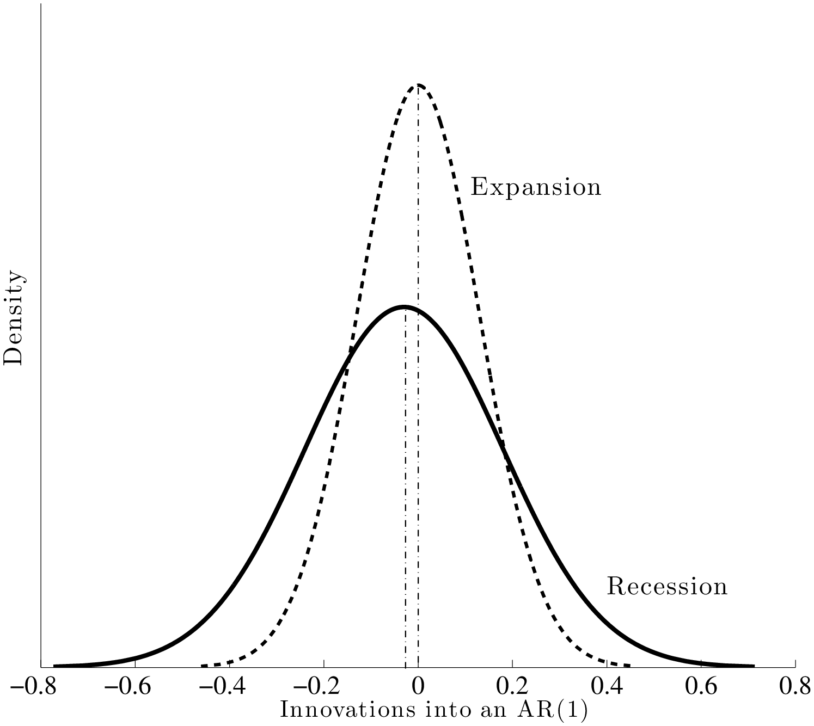
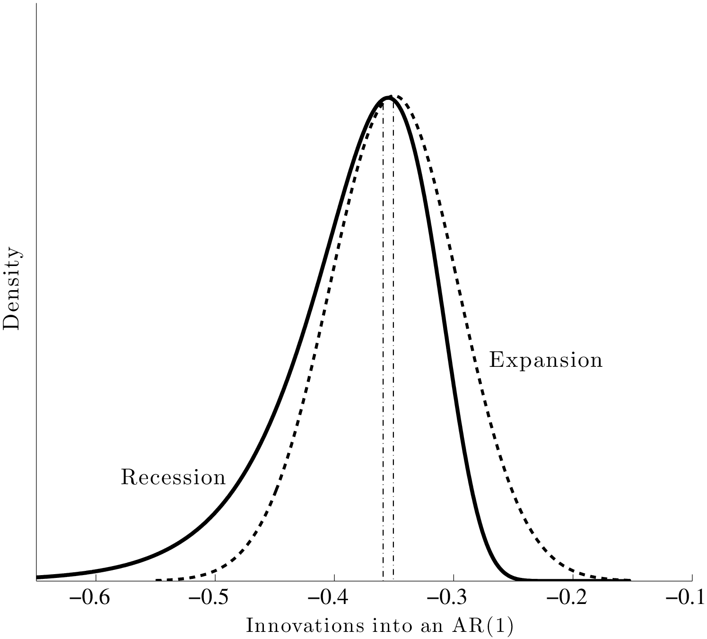
Our main findings are as follows. First, contrary to past research, we find that idiosyncratic shock variances are not countercyclical. However, uncertainty does have a significant countercyclical component, but it comes from the left-skewness increasing during recessions. The two scenarios—countercyclical variance versus left-skewness—are shown in Figure 1. Thus, during recessions, the upper end of the earnings growth distribution collapses—large upward earnings movements become less likely—whereas the bottom end expands—large downward movements become more likely. At the same time, the center of the shock distribution (i.e., the median) remains stable and moves little compared with either tail, causing the countercyclicality of left-skewness. Therefore, relative to the earlier literature that argued for increasing variance—which results in some individuals receiving larger positive shocks during recessions—our results are more pessimistic: uncertainty increases in recessions without an increasing chance of upward movements (Figure 10).
Next, we turn to the systematic component (factor structure) of business cycle risk. We find large and robust differences between groups of individuals who enter a recession with different levels of average earnings. For example, when we rank prime-age male workers based on their 2002–06 average earnings, those in the 10th percentile of this distribution experienced a fall in their earnings during the Great Recession (2007–10) that was about 18 percent worse than that experienced by those who ranked in the 90th percentile.2 In fact, average earnings change during this recession was almost a linear (upward sloping) function of pre-recession average earnings all the way up to the 95th percentile (Figure 13). Interestingly, this good fortune of high-income workers did not extend to the very top: those in the top 1 percent, based on their 2002–06 average earnings, experienced an average loss that was 21 percent worse than that of workers in the 90th percentile. Although these magnitudes are largest for the Great Recession, the same general patterns emerged in the other recessions too. For example, the 1980–83 double-dip recession is quite similar to the Great Recession for all but the top 5 percentiles. But the large earnings loss for the top 1 percent was not observed during that recession at all. In fact, this phenomenon appears to be more recent: the worst episode for the top 1 percent was the otherwise mild 2000–2002 recession, when their average earnings loss exceeded that of those in the 90th percentile by almost 30 percent.
Our results on the business cycle behavior of top incomes complement and extend the findings in Parker and Vissing-Jo rgensen (2010). In particular, that paper used repeated cross sections to construct synthetic groups of individuals based on their earnings level. They then documented the strong cyclicality of high earnings groups over the business cycle. With panel data, we are able to track the same individuals over time, which allows us to control for compositional change and measure how persistent the effects of such fluctuations are. Our results confirm their finding that the top earners have extremely cyclical incomes and further reveal the high persistence of these fluctuations. For example, individuals who were in the top 0.1 percent as of 1999 experienced a 5-year average earnings loss between 2000 and 2005 that exceeded 50 log points! Similarly large persistent losses are found for the top income earners during the 5-year periods covering the Great Recession (2004–09) as well as the 1989–94 period.
The analysis in this paper is deliberately nonparametric, made possible by the large sample size. The substantial non-linearities revealed by this analysis justifies this approach, because a more parametric approach could easily miss or obscure these empirical patterns. An added benefit is that our approach allows us to present our main findings in the form of figures and easy-to-interpret statistics, which makes the results transparent. Nevertheless, a parametric specification is indispensable for calibrating economic models. To provide useful input into those studies, in Section 7, we estimate a simple parametric model of earnings dynamics that allows for mean-reverting shocks and cyclical variation in both the variance and the skewness.
Related Literature. The cyclical patterns of idiosyncratic labor earnings risk have received attention from both macro and financial economists. In an infinite-horizon model with permanent shocks, Constantinides and Duffie (1996) showed that one can generate a high equity premium if idiosyncratic shocks have countercyclical variance. Storesletten et al. (2004) used a clever empirical identification scheme to estimate the cyclicality of shock variances.3 Using the Panel Study of Income Dynamics (PSID), they estimated the variance of AR(1) innovations to be three times higher during recessions. Probably because of the small sample size, they did not, however, investigate the cyclicality of the skewness of shocks, nor did they allow for a factor structure as we do here. Moreover, note that the question of interest is “the cyclical changes in the dispersion of earnings growth rates,” which involves triple-differencing. Answering such a question without a very large and clean dataset is extremely challenging. Our findings are more consistent with Mankiw (1986), who showed that one can resolve the equity premium puzzle if idiosyncratic shocks have countercyclical left-skewness—as found in the current paper. In a related context, Brav et al. (2002) found that accounting for the countercyclical skewness of individual consumption growth helps generate a high equity premium with a low risk aversion parameter. Finally, Schulhofer-Wohl (2011) is an important precursor to our paper that uses Social Security data (with capped earnings) and analyzes the cyclicality of labor income. However, he does not examine the business cycle variation in idiosyncratic earnings risk.
This paper is also related to some recent work that emphasizes the effects of job displacement risk on the costs of business cycles.4 In particular, Krebs (2007) has argued persuasively that higher job displacement risk in recessions gives rise to countercyclical left-skewness of earnings shocks, generating costs of business cycles that far exceed earlier calculations by Lucas (1987); Lucas (2003) and others. Our findings complement this work in two ways. First, we directly measure the overall cyclicality of earnings changes and document that left-skewness is indeed strongly countercyclical. Second, our results show that this outcome is due not only to increased downside risk during recessions, but also equally to the compression of the upper half of the earnings growth distribution. Therefore, the effects of recessions are not confined to a relatively small subset of the population that faces job displacement risk, but are pervasive across the population.
2 The Data
We employ a unique, confidential, and large panel dataset on earnings histories from the U.S. Social Security Administration records. For our baseline analysis, we draw a 10 percent random sample of U.S. males—covering 1978 to 2011—directly from the Master Earnings File (MEF) of Social Security records.5
The Master Earnings File. The MEF is the main source of earnings data for the Social Security Administration and grows every year with the addition of new earnings information received directly from employers (Form W-2 for wage and salary workers).6 The MEF includes data for every individual in the United States who has a Social Security number. The dataset contains basic demographic characteristics, such as date of birth, sex, race, type of work (farm or nonfarm, employment or self-employment), self-employment taxable earnings, and several other variables. Earnings data are uncapped (no top-coding) and include wages and salaries, bonuses, and exercised stock options as reported on the W-2 form (Box 1). For more information, see Panis et al. (2000) and Olsen and Hudson (2009). Finally, all nominal variables were converted into real ones using the Personal Consumption Expenditure (PCE) deflator with 2005 taken as the base year.
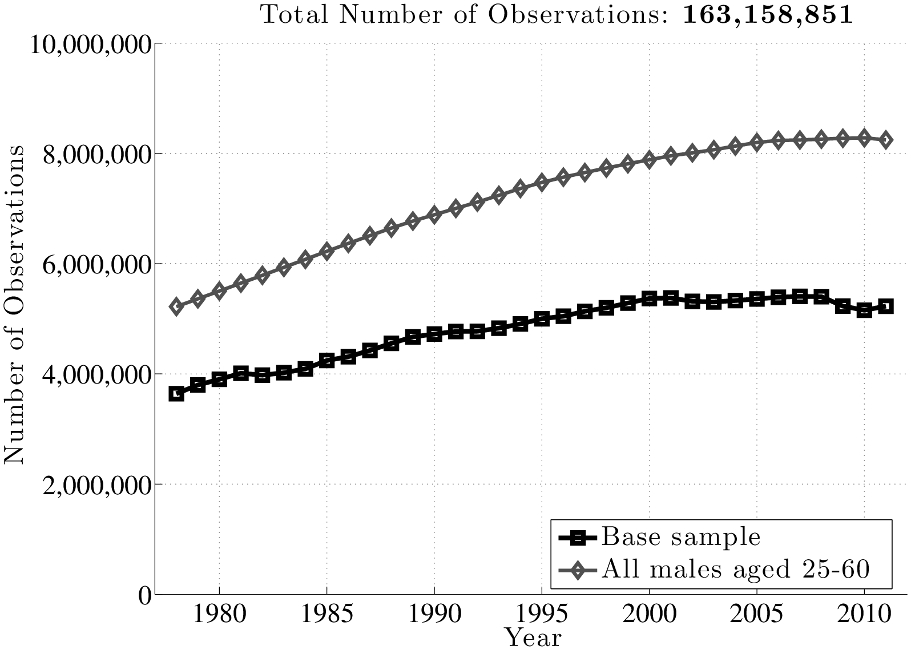
Creating the 10 Percent Sample. To construct a nationally representative panel of males, we proceed as follows. For 1978, a sample of 10 percent of U.S. males are selected based on a fixed subset of digits of (a transformation of) the Social Security Number (SSN). Because these digits of the SSN are randomly assigned, this procedure easily allows randomization. For each subsequent year, new individuals are added to account for the newly issued SSNs; those individuals who are deceased are removed from that year forward. This process yields a representative 10 percent sample of U.S. males every year.
For a statistic computed using data for (not necessarily consecutive) years \(\)\((t_{1},t_{2},...,t_{n})\), an individual observation is included if the following three conditions are satisfied for all these years: the individual (i) is between the ages of 25 and 60, (ii) has annual wage/salary earnings that exceed a time-varying minimum threshold, and (iii) is not self-employed (i.e., has self-employment earnings less than the same minimum threshold). This minimum, denoted \(Y_{\text{min},t}\), is equal to one-half of the legal minimum wage times 520 hours (13 weeks at 40 hours per week), which amounts to an annual earnings of approximately $1,300 in 2005. This condition allows us to focus on workers with a reasonably strong labor market attachment (and avoids issues with taking the logarithm of small numbers). It also makes our results more comparable to the income dynamics literature where this condition is standard (see, among others, Abowd and Card (1989), Meghir and Pistaferri (2004), Storesletten et al. (2004), as well as Juhn et al. (1993) and Autor et al. (2008) on wage inequality). Finally, the MEF contains a small number of extremely high earnings observations each year. To avoid potential problems with outliers, we cap (winsorize) observations above the 99.999th percentile.
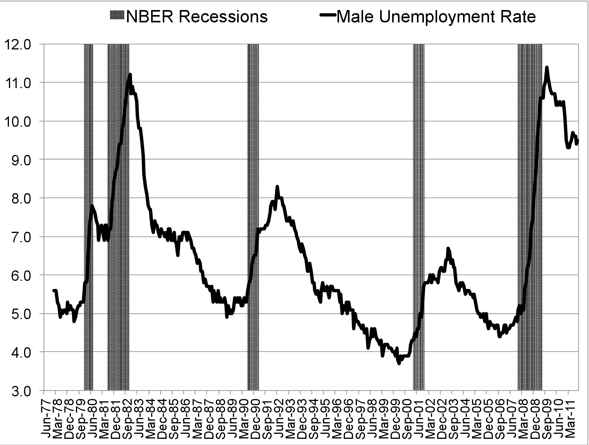
Figure 2 displays the number of individuals that satisfy these selection criteria, as well as the total number of individuals in each year. The sample starts with about 3.7 million individuals in 1978 and grows to about 5.4 million individuals by the mid-2000s. Notice that the number of individuals in the sample does not follow population growth one-for-one (grey line marked with diamonds), because inclusion in the base sample also requires participating in the labor market in a given year (hence the slowdown in sample growth in the 2000s and the fall during the Great Recession).
Appendix A reports a broad set of summary statistics for our sample. The lowest earnings that qualifies a male worker in the top 10 percent (e.g., above the 90th percentile) has been steady at approximately $98,000 (in 2005 dollars) since year 2000. In 2011, a worker must be making more than $302,500 to be in the top 1 percent. This threshold was highest in 2007 when it reached $318,000.7
Recessionary vs. Expansionary Episodes. The start date of a recession is determined as follows. If the National Bureau of Economic Research (NBER) peak of the previous expansion takes place in the first half of a given year, that year is classified as the first year of the new recession. If the peak is in the second half, the recession starts in the subsequent year.8 The ending date of a recession is a bit more open to interpretation for our purposes, because the NBER troughs are often not followed by a rapid fall in the unemployment rate and a rise in individual wages. This can be seen in Figure 3. For example, whereas the NBER announced the start date of the expansion as March of 1991, the unemployment rate peaked in the summer of 1992. Similarly, while the NBER trough was November 2001, the unemployment rate remained high until mid-2003. With these considerations in mind, we settled on the following dates for the last three recessions: 1991–92, 2001–02, and 2008–10. We treat the 1980–1983 period as a single recession, given the extremely short duration of the intervening expansion, the anemic growth it brought, and the lack of a significant fall in the unemployment rate. Based on this classification, there are three expansions and four recessions during our sample period.9
3 Earnings Risk over the Business Cycle: First Look
Before delving into the full-blown panel data analysis in the next section, we begin by providing a bird’s-eye view of the business cycle patterns in earnings risk. Specifically, we exploit the panel dimension of the MEF dataset to document how the dispersion and skewness of the earnings growth distribution vary over the business cycle.10
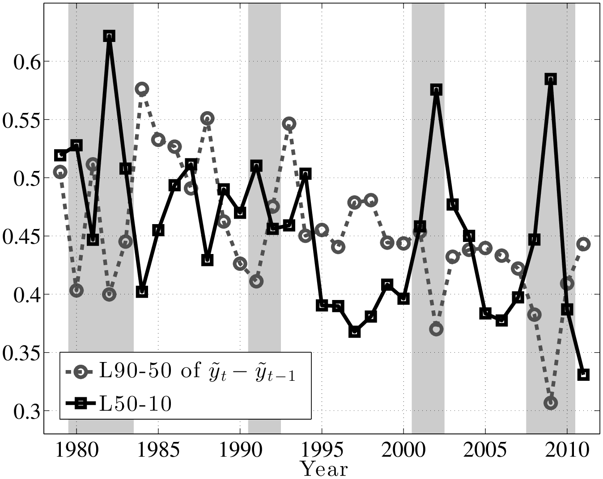
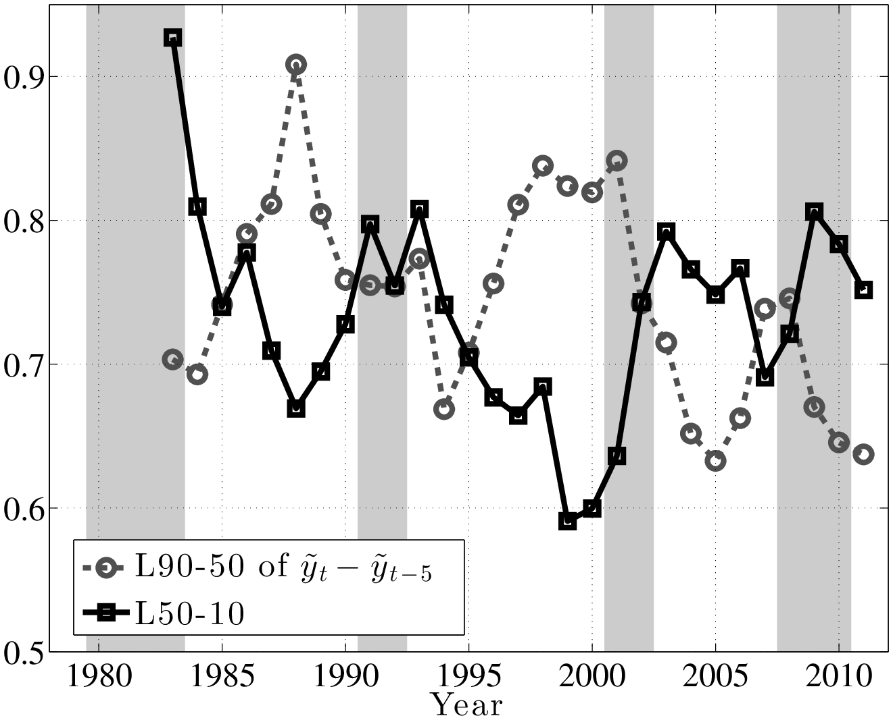
It will be useful to distinguish between earnings growth over short and long horizons. To this end, we examine 1- and 5-year log earnings growth rates (denoted with \(\tilde{y}_{t}-\tilde{y}_{t-k}\) for \(k=1,5\)) and think of these as roughly corresponding to “transitory” and “persistent” earnings shocks. A more rigorous justification for this interpretation will be provided in the next section.
The left panel of Figure 4 plots the evolution of the log differential between the 90th and 50th percentiles of (\(\tilde{y}^ {}_{t}-\tilde{y}^ {}_{t-1}\)) distribution (hereafter L90-50), as well as the log differential between the 50th and 10th percentiles (L50-10). The first important observation is that the top and bottom ends of the shock distributions clearly move in opposite directions over the business cycle. In particular, L50-10 rises strongly during recessions, implying that there is an increased chance of larger downward movements during recessions. In contrast, the top end (L90-50) dips consistently in every recession, implying a smaller chance of upward movements during recessions. In other words, relative to the median growth rate, the top end compresses, whereas the bottom end expands during recessions. Similarly, the right panel of Figure 4 plots the corresponding graph for persistent (5-year) shocks. The comovement of the L90-50 and L50-10 is clearly seen here, even more strongly than in the transitory shocks (the correlation of the two series is –0.67).
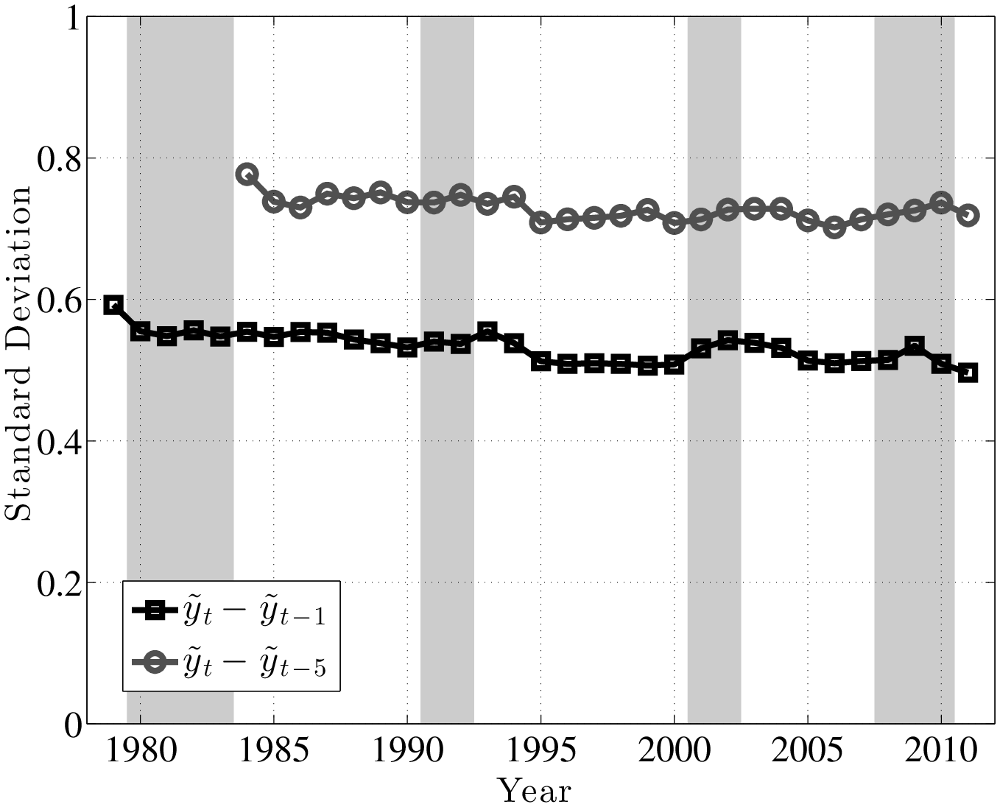
A couple of remarks are in order. First, the fact that L90-50 and L50-10 move in opposite directions implies that L90-10 (which is a measure of overall dispersion of shocks) changes little over the business cycle, because the fall in L90-50 partially cancels out the rise in L50-10. An alternative measure of shock dispersion—the standard deviation—is plotted in Figure 5 for both persistent and transitory shocks, which shows that dispersion does not increase much during recessions (notice the small cyclical variation on the y-axis). Perhaps the only exception is the 2001–02 recession, during which time the transitory shock variance increases. In the coming sections, this point will be examined further and will be made more rigorously. This observation will provide one of the key conclusions of this paper, given how clearly it contradicts the commonly held belief that idiosyncratic earnings shock variances are strongly countercyclical.
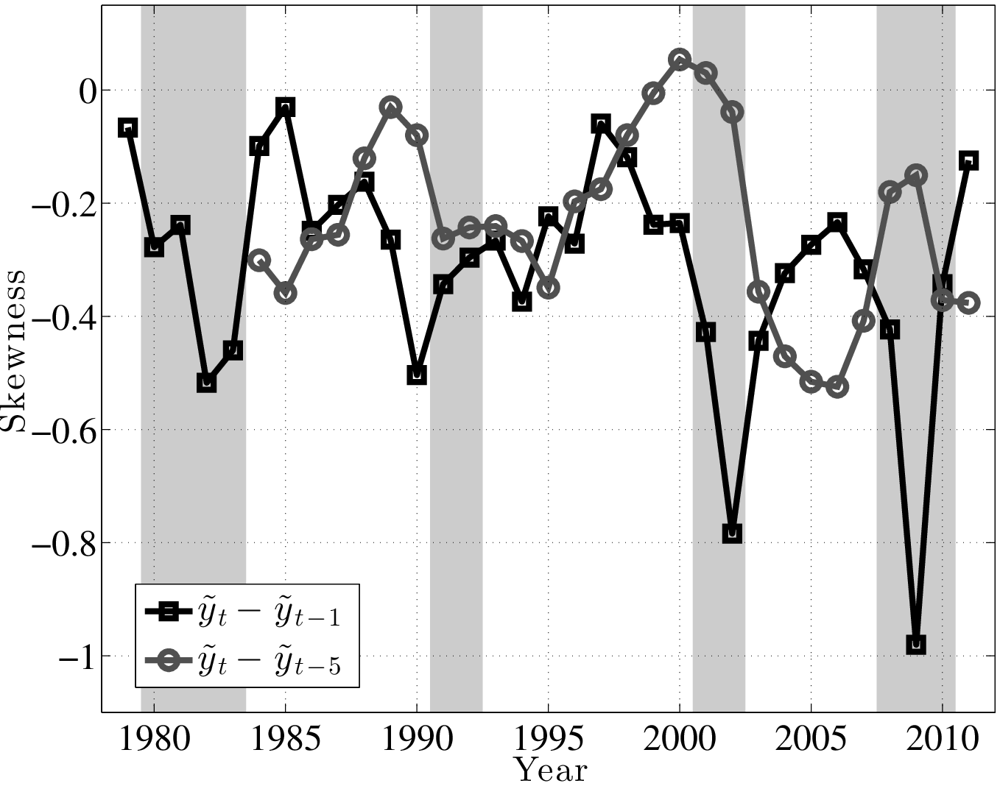
Second, the finding described above—that the top end of the shock distribution compresses during recessions, while at the same time the bottom end expands—suggests that one important cyclical change could be found in the skewness of shocks. Indeed, as seen in Figure 6, both the 1- and 5-year earnings growth distributions become more left-skewed (negative skewness increases) during recessions and the magnitude of change is large.11
Trends in Volatility: A Brief Digression. Looking at the left panel of Figure 4, notice that L90-50 displays a clear downward trend during this time period. A fitted linear trend reveals a drop of 11 log points from 1979 to 2011. The interpretation is that the likelihood of large upward movements has become smaller during this period. We see a similar, if a bit less pronounced, trend in L50-10, which indicates that the likelihood of large falls has also become somewhat smaller. Overall, both the L90-10 and the standard deviation of earnings growth (Figure 5) display a clear downward trend. This finding is in contrast to the conventional wisdom in the literature that earnings shock variances have generally risen since the 1980s (Moffitt and Gottschalk (1995)). However, it is consistent with a number of recent papers that use administrative data (e.g., Sabelhaus and Song (2010) and others). In this paper, we will not dwell much on this trend in order to keep the analysis focused on the cyclical changes in earnings risk.
4 Panel Analysis
The analysis so far provided a general look at how earnings shocks vary over the business cycle. However, one can imagine that the properties of earnings shocks vary systematically with individual characteristics and heterogeneity: for example, young and old workers can face different earnings shock distributions than prime-age workers with more stable jobs. Similarly, workers at different parts of the earnings distribution could experience different types of earnings risks. The large sample size allows us to account for such variation without making strong parametric assumptions.
4.1 A Framework for Empirical Analysis
Let \(\widetilde{y}^{i}_{t}\) denote individual \(i\)’s log labor earnings in year \(t\) and let \(\mathbf{V}^{i}_{t-1}\) denote a vector of (possibly time-varying) individual characteristics that will be used to group individuals as of period \(t-1.\) For each business cycle episode, we will examine how earnings growth varies between these groups defined by \(\mathbf{V}^{i}_{t-1}\). We shall refer to this first type of variation alternatively as a factor structure or systematic risk. Of course, even individuals within these finely defined groups will likely experience different earnings growth rates during recessions and expansions, reflecting within-group or idiosyncratic earnings shocks. We will also quantify the cyclical nature of such shocks.
4.1.1 Grouping Individuals into \(\mathbf{V}^{i}_{t-1}\)
Let \(t\) denote the generic time period that marks the beginning of a business cycle episode. We now describe how we group individuals based on their characteristics at time \(t-1\). Each individual is identified by three characteristics that can be used to form groups. Not every characteristic will be used in the formation of groups in every experiment.12
1. Age. Individuals are divided into seven age groups. The first six groups are five-year wide (25–29, 30–34,…, 50–54) and the last one covers six years: 55–60.
2. Pre-episode Average Earnings. A second dimension individuals differ along is their average earnings. For a given year \(t\), we consider all individuals who were in the base sample (i) in year \(t-1\) and (ii) in at least two more years between \(t-5\) to \(t-2\). For example, an individual who is 23 years old in \(t-5\) (and hence is not in the base sample that year) will be included in the final sample for year \(t\) if he has earnings exceeding \(Y_{\min}\) in every year between \(t-3\) and \(t-1\).
We are interested in average earnings to determine how a worker ranks relative to his peers. But even within the narrow age groups defined above, age variation can skew the rankings in favor of older workers. For example, between ages 25 and 29, average earnings grows by 42 percent in our sample, and between 30 and 34, it grows by 20 percent. So, unless this lifecycle component is accounted for, a 29-year-old worker in the first age group would appear in a higher earnings percentile than the same worker when he was 25. This variation would confound age and earnings differences.
To correct for this, we proceed as follows. First, using all earnings observations from our base sample from 1978 to 2011, we run a pooled regression of \(\widetilde{y}^{i}_{t,h}\) on age (\(h\)) and cohort dummies without a constant to characterize the age profile of log earnings. We then scale the age dummies (denoted with \(d_{h}\)) so as to match the average log earnings of 25-year-old individuals used in the regression. Using these age dummies, we compute the average earnings between years \(t-5\) and \(t-1\) for the average individual of age \(h\) in year \(t\). Then for a given individual \(i\) of age \(h\) in year \(t\), we first average his earnings from \(t-5\) to \(t-1\) (and set earnings below \(Y_{\text{min},t}\) equal to the threshold) and then normalize it by the population average computed using the age dummies: \[ \overline{Y}^{i}_{t-1}\equiv \frac{{\displaystyle \sum ^{5}_{s=1}}e^{\widetilde{y}^{i}_{t-s}}}{{\displaystyle \sum ^{5}_{s=1}}e^{d_{h-s}}}. \]
This 5-year average (normalized) earnings is denoted with \(\overline{Y}^{i}_{t-1}\). We also define \(y^{i}_{t}\equiv \widetilde{y}^{i}_{t,h}-d_{h}\) as the log earnings in year \(t\) net of life cycle effects, which will be used in the analysis below.
3. Pre-episode Earnings Growth. A third characteristic is an individual’s (recent) earnings growth. This could be an indicator of individuals whose careers are on the rise, as opposed to being stagnant, even after controlling for average earnings as done above. We compute \(\Delta _{5}(y^{i}_{t-1})\equiv \left (y^{i}_{t-1}-y^{i}_{t-s}\right)/(s-1)),\) where \(s\) is the earliest year after \(t-6\) in which the individual has earnings above the threshold. In the main text, we focus on the first two characteristics and, to save space, report the results with pre-episode earnings growth in Appendix B.5.
5 Within-Group (Idiosyncratic) Shocks
One focus of this analysis will be on simple measures of earnings shock volatility, conditional on individual characteristics. For the sake of this discussion, suppose that log earnings (net of lifecycle effects) is composed of a random walk component with innovation \(\eta ^{i}_{t}\) plus a purely transitory term \(\varepsilon ^{i}_{t}\). Then, computing the within-group variance, we get
\[ \begin{aligned} \operatorname{var}(y^{i}_{t+k}-y^{i}_{t}|\mathbf{V}^{i}_{t-1}) & = \underset{k\text{ terms}}{\underbrace{\left(\sum ^{k}_{s=1}\operatorname{var}(\eta ^{i}_{t+s}|\mathbf{V}^{i}_{t-1})\right)}} \\ &\quad +\underset{2\text{ terms}}{\underbrace{\left(\operatorname{var}(\varepsilon ^{i}_{t}|\mathbf{V}^{i}_{t-1})+\operatorname{var}(\varepsilon ^{i}_{t+k}|\mathbf{V}^{i}_{t-1})\right)}}. \end{aligned} \]
Two points can be observed from this formula. First, as we consider longer time differences, the variance reflects more of the permanent shocks, as seen by the addition of the \(k\) innovation variances and given that there are always two variances from the transitory component. For example, computing this variance over a five-year period that spans a recession (say, 1979–84 or 1989–94) would allow us to measure how the variance of permanent shocks changes during recessions. It will also contain transitory variances, but for two years that are not part of a recession (1979 and 1984, for example). Second, looking at short-term variances, say, \(k=1,\) yields a formula that contains only one permanent shock variance and two transitory shock variances. So, as we increase the length of the period over which the variance is computed, the statistic shifts from being informative about transitory shock variances toward more persistent variation.
In the analysis below, we consider \(k=1\) and \(k=5.\) The choice of \(k=5\) is motivated by the fact that recessions last 2 to 3 years, so that by year \(t+5\) the unemployment rate will have declined from its peak and will, in most cases, be close to the pre-recession level (in year \(t\)). This feature will facilitate the interpretation of our findings, as we discuss later.
A Graphical Construct. Most of the empirical analysis in this paper will be conducted using the following graphical construct: we plot the quantiles of \(\overline{Y}^{i}_{t-1}\) for a given age group on the x-axis against the distribution of future earnings growth rates for that quantile on the y-axis: \(\mathbb{F}(y^{i}_{t+k}-y^{i}_{t}|\overline{Y}^{i}_{t-1})\). The properties of these conditional distributions for each \(\overline{Y}^{i}_{t-1}\) will be informative about the nature of within-group variation. To study these properties more closely, we will use the same construct to plot various statistics from these conditional distributions, such as various percentiles, the mean, the variance, the skewness, and so on.
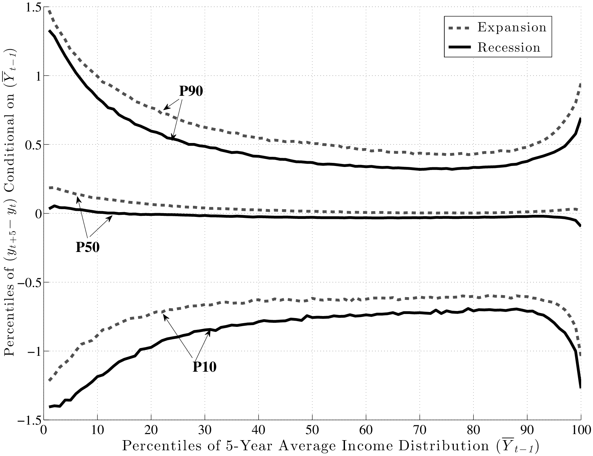
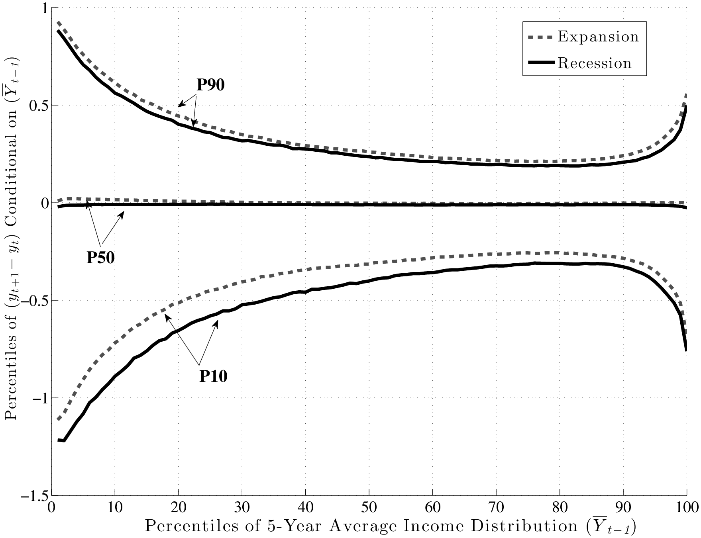
Figure 7 is the first use of this graphical construct and contains a lot of information that will be referred to in the rest of this section. The top panel displays P90 (the 90th percentile), P50 (median), and P10 of the distribution of long-run changes, \(y^{i}_{t+5}-y^{i}_{t}\), on the y-axis against each percentile of \(\overline{Y}^{i}_{t-1}\) on the x-axis. To compare recessions and expansions, we averaged each percentile graph separately over the four recessions (solid black lines) and three expansions (dashed grey lines) during our sample period.13 Similarly, because these figures look quite similar across age groups, to save space here, we also averaged across age groups. (We report the complete set of figures by age group in Appendix B.)
First, notice the variation in these percentiles as we move to the right along the x-axis. Interestingly, the following pattern holds in both recessions and expansions: At any point in time, individuals with the lowest levels of past average earnings face the largest dispersion of earnings shocks (\(y^{i}_{t+k}-y^{i}_{t}\)) looking forward. That is, L90-10 is widest for these individuals and falls in a smooth fashion moving to the right. Indeed, workers who are between the 70th and 90th percentiles of the \(\overline{Y}^{i}_{t-1}\) distribution face the smallest dispersion of shocks looking ahead. As we continue moving to the right (into the top 10 percent), the shock distribution widens again. Notice that the P10 and P90 of the \(y^{i}_{t+5}-y^{i}_{t}\) distribution look like the mirror image of each other relative to the median, so the variation in L90-10 as we move to the right is driven by similar variations in P90 and P10 individually.
Turning to the bottom panel, the same graph is plotted now for \(y^{i}_{t+1}-y^{i}_{t}\) (transitory shocks).14 Precisely, the same qualitative features are seen here, with low- and high-income individuals facing a wider dispersion of persistent shocks than those in the “safer” zones—between the 70th and 90th percentiles. Of course, the scales of both graphs are different: the overall dispersion of persistent shocks is much larger than that of transitory shocks, which is to be expected. To summarize, both graphs reveal strong and systematic variation in the dispersion of persistent and transitory earnings shocks across individuals with different past earnings levels.15
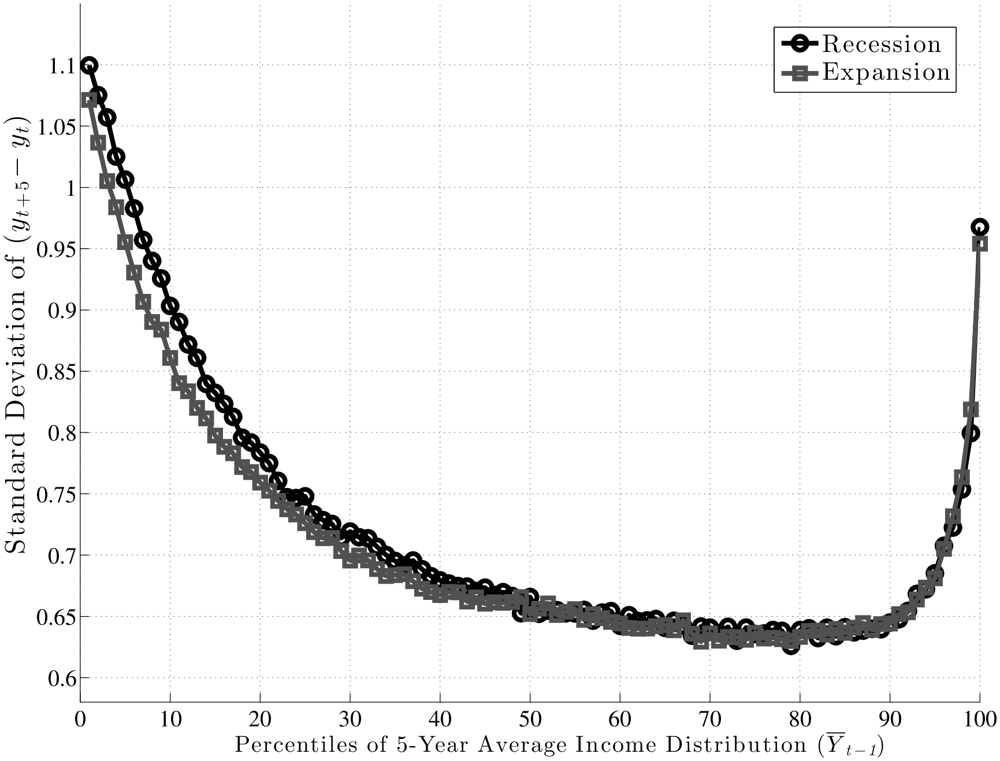
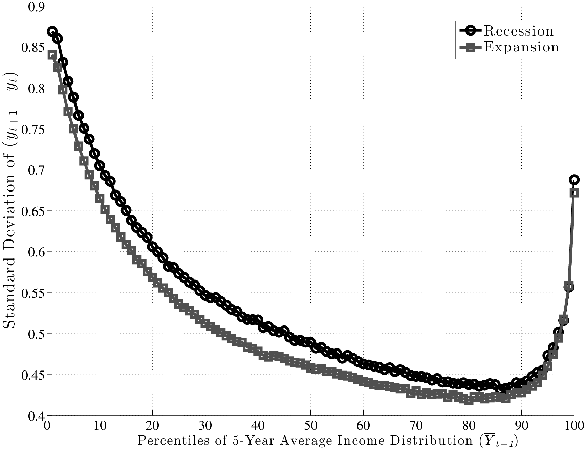
Now we turn to two key questions of interest. First, what happens to idiosyncratic shocks in recessions? For example, are shock variances countercyclical? And second, how does any potential change in the distribution of idiosyncratic shocks vary across earnings levels (i.e., the cross-partial derivative)? In other words, do we see the shock distribution of individuals in different earnings levels being affected differently by recessions?
5.1 Are Shock Variances Countercyclical? No.
The existing literature has largely focused on the cyclicality of persistent shocks, so this is where we also start (top panel of Figure 7). First, note that both P90 and P10 shift downward by similar amounts from expansion to recession. Consequently, the L90-10 gap varies little over the business cycle, as we shall see momentarily. Furthermore, following the same steps as the one used to construct these graphs, one can also compute the standard deviation of \(y^{i}_{t+5}-y^{i}_{t}\) conditional on \(\overline{Y}^{i}_{t-1}\)during recessions and expansions, which is plotted in the left panel of Figure 8. The two graphs (for expansions and recessions) virtually overlap, over the entire range of pre-episode earnings levels. For transitory shocks (bottom panel), there is more of a gap, but the two lines are still quite close to each other.
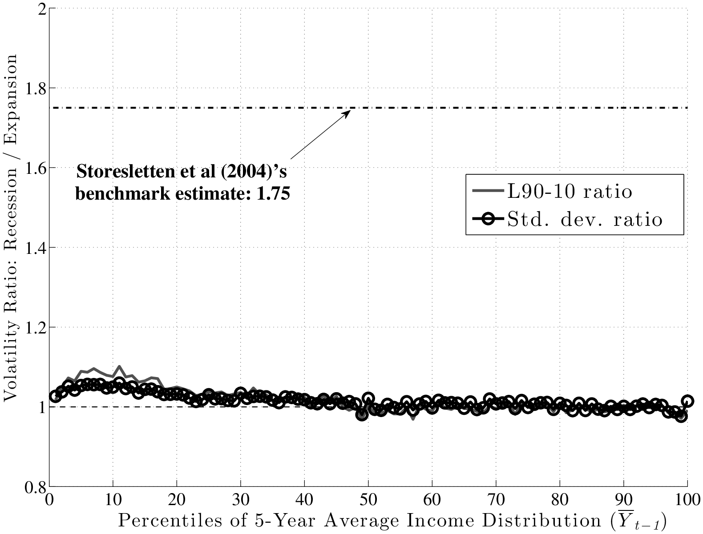
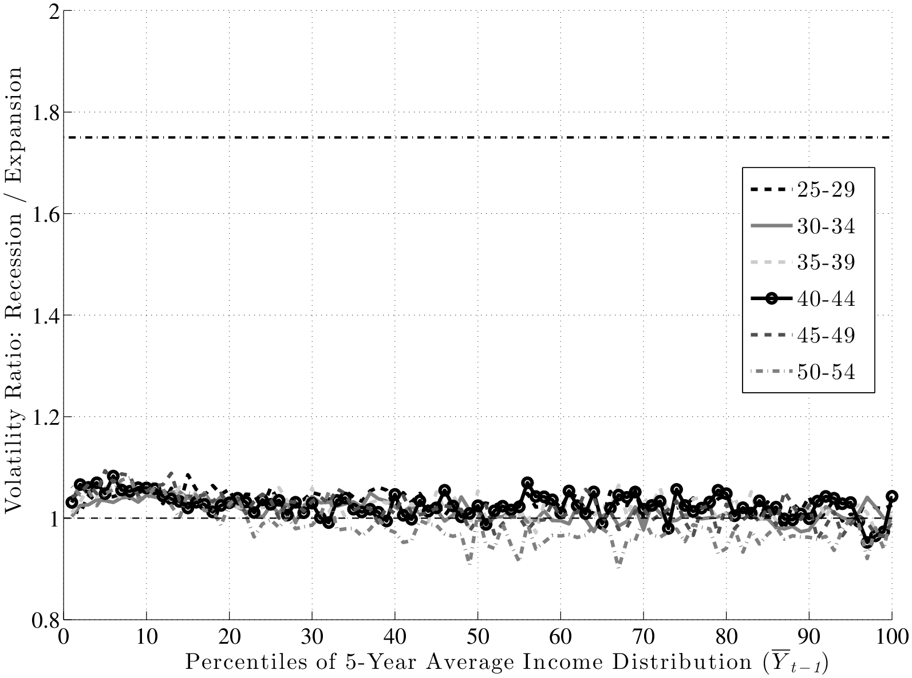
To make the measurement of countercyclicality more precise, the left panel of Figure 9 plots the ratios (recession/expansion) of (i) the standard deviations and (ii) the L90-10s of 5-year earnings changes. Both measures are only about 2 percent higher in recessions than in expansions. For comparison, Storesletten et al. (2004) used indirect methods to estimate a standard deviation of 0.13 for innovations into a persistent AR(1) process during expansions and 0.21 for recessions. The ratio is 1.75 compared with the 1.02 we find in this paper. In fact, above the 30th percentile of the past earnings distribution, the average ratio in Figure 9 is precisely 1.00.16
A second question that was raised above was whether recessions affect the distribution of shocks differently in different parts of the earnings distribution. It is probably evident by now that the answer is “no”: as seen in Figure 9, the ratios of L90-10s and standard deviations are flat. A similar question is whether countercyclicality might be present for some age groups, which may not be apparent once age groups are combined as in the left panel of Figure 9. To check for this, we plot the ratio of standard deviations separately for each age group in the right panel. As seen here, the graph is nearly flat for all age groups and remain trapped within a narrow corridor between 0.95 and 1.05.
To summarize, we conclude that when it comes to the variance of persistent shocks, the main finding is one of homogeneity: the variance remains virtually flat over the business cycle for every age and earnings group.
5.2 Countercyclical Left-Skewness: A Tale of Two Tails
So, do recessions have any effect on earnings shocks? The answer is yes, which could already be anticipated from Figure 7, by noting that while P90 and P10 move down together during recessions, P50 (the median of the shock distribution) remains stable and moves down by only a little. This has important implications: L90-50 gets compressed during recessions, whereas L50-10 expands. In other words, for every earnings level \(\overline{Y}^{i}_{t-1}\), when individuals look ahead during a recession, they see a smaller chance of upward movements (relative to an expansion), and a higher chance of large downward movements.
This result is not specific to using P90 or P10, but is pervasive across the distribution of future earnings growth rates. This can be seen in Figure 10, which plots the change in selected percentiles above (and including) the median from an expansion to a recession (top panel). The bottom panel shows selected percentiles below the median. Starting from the top, and focusing on the middle part of the x-axis, we see that P99 falls by about 30 log points from an expansion to a recession, whereas P95 falls by 20, P90 falls by 15, P75 falls by 6, and P50 falls by 5 log points, respectively. As a result, the entire upper half of the shock distribution gets squeezed toward the median. In other words, the half of the population who experience earnings change above the median now experience ever smaller upward moves during recessions. Turning to the bottom panel, we see the opposite pattern: P50 falls by 5 log points, whereas P25 falls by 7, and P10 falls by 15 log points, respectively. Consequently, the bottom half of the shock distribution now expands, with “bad luck” meaning even “worse luck” during recessions.
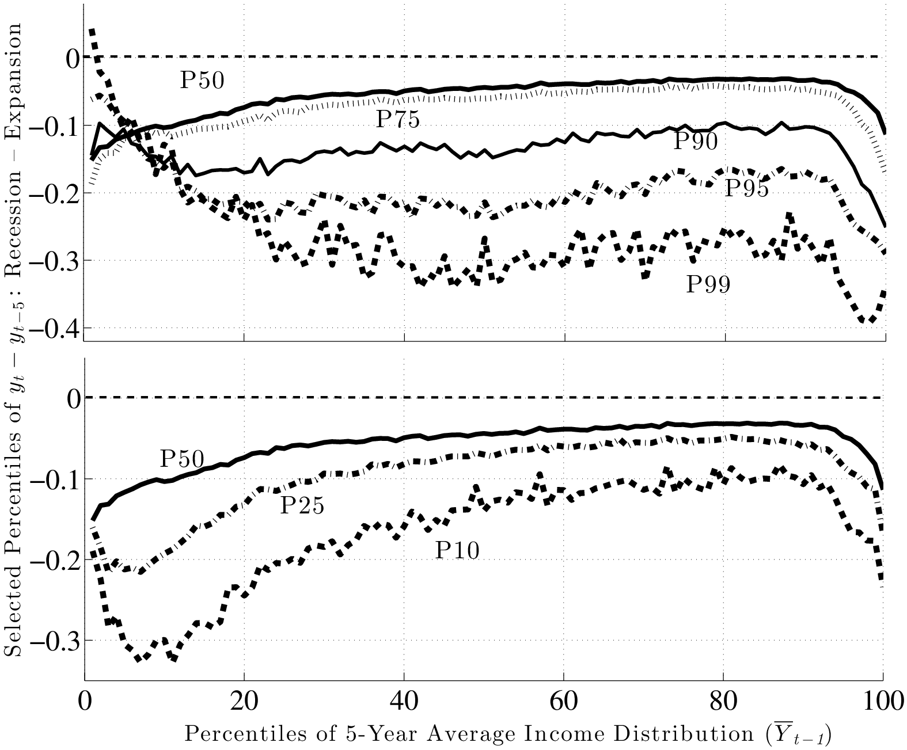
From this analysis, a couple of conclusions can be drawn. First, idiosyncratic risk is countercyclical. However, this does not happen by a widening of the entire distribution (e.g., variance rising), but rather a shift toward a more left-skewed shock distribution. Another useful way to document this latter point is by computing some summary statistics for skewness. With higher order moments, one has to be careful about extreme observations. These are not likely to be outliers as with survey data, but even if they are genuine observations, we may want to be careful that a few observations do not affect the overall skewness measure. For this purpose, our preferred statistic is “Kelley’s measure” of skewness, which relies on the quantiles of the distribution and is robust to outliers (left panel of Figure 11). It is computed as the relative difference between the upper and lower tail inequalities: (L90-50 – L50-10)/L90-10. A negative number indicates that the lower tail is wider than the upper tail, and vice versa for a positive number. For completeness, we also plot the third central moment in the right panel. The substantive conclusions we draw from both statistics are essentially the same.
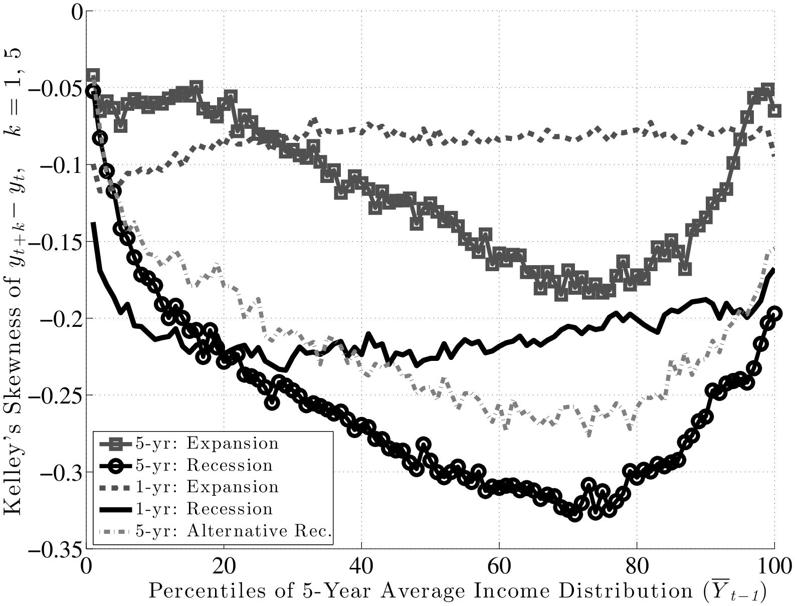
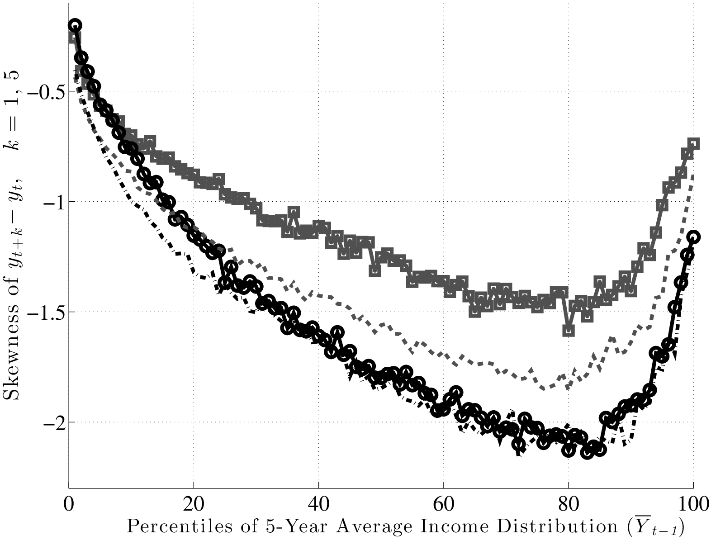
Inspecting the graphs in the left panel of Figure 11, first, notice that individuals in higher earnings percentiles face persistent shocks that are more negatively skewed than those faced by individuals ranked lower, consistent with the idea that the higher an individual’s earnings are, the more room he has to fall. Second, and more importantly, this negative skewness increases during recessions for both transitory and persistent shocks. Another advantage of Kelley’s skewness measure is that its value has a straightforward interpretation. For example, for individuals at the median of the \(\overline{Y}_{t-1}\) distribution, Kelley’s measure for persistent shocks averages –0.125 during expansions. This means that the dispersion of shocks above P50 accounts for 44 percent of overall L90-10 dispersion. Similarly, dispersion below P50 accounts for the remaining 56 percent (hence \((44\%-56\%)/100\%=-0.12\)) of L90-10. In recessions, however, this figure falls to –0.30, implying that L90-50 accounts for 35 percent of L90-10 and the remaining 65 percent is due to L50-10. This is a substantial shift in the shape of the persistent shock distribution over the business cycle. The change in the skewness of transitory shocks is similar, if somewhat less pronounced. It goes from –0.08 down to –0.226 at the median (the share of L90-50 going down from 46 percent of L90-10 down to 39 percent). As seen in Figure 11, the rise in left-skewness takes place with similar magnitudes across the earnings distribution (with the exception of very low-income individuals).
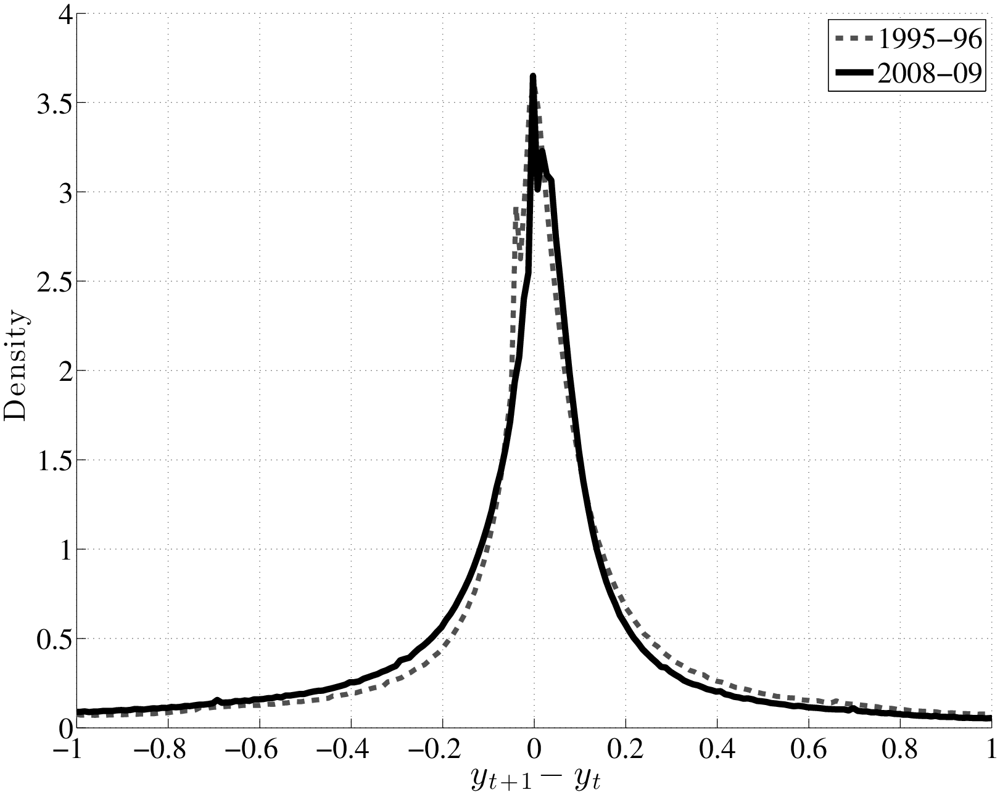
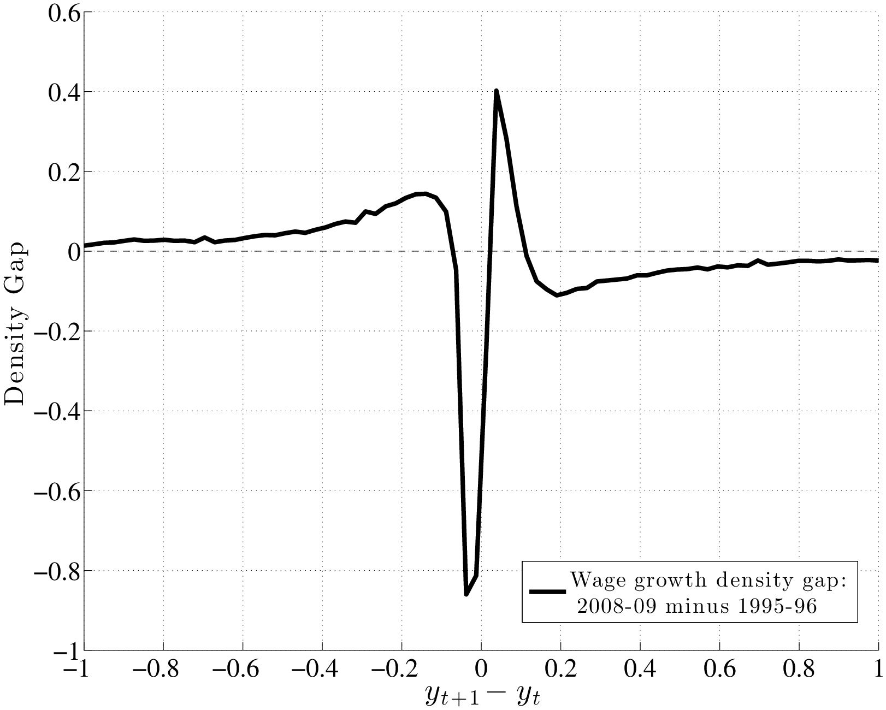
To understand how different this conclusion is from a simple countercyclical variance formulation, recall Figure 1, which plots the densities of two normal random variables: one with zero mean and a standard deviation of 0.13 (expansion) and a second one with a mean of –0.03 and a standard deviation of 0.21 (recession; both numbers from Storesletten et al. (2004)). As seen here, the substantial increase in variance and small fall in the mean imply that many individuals will receive larger positive shocks in recessions than in expansions under this formulation. For comparison, the left panel of Figure 12 plots the empirical densities of earnings growth from the U.S. data, comparing the 1995–96 period to the worst year of the Great Recession (2008–09). To highlight how the density changes, the right panel plots the difference between the two densities. As seen here, the probability mass on the right side shifts from large positive shocks to more modest ones; on the left side, it shifts from small negative shocks to even larger negative ones.17
What Role Does Unemployment Play? Is the countercyclicality of left-skewness all due to unemployment, which increases during recessions? Although unemployment risk is unlikely to explain the change in skewness coming from the compression of the upper half of the shock distribution, this is still a valid question for the expansion of the bottom half. In Appendix B.6, we investigate this question using data both from the MEF and the CPS. We conclude that, while the the cyclical changes in unemployment are clearly non-negligible, they are not large enough to generate the bulk of the expansion of the bottom half of the shock distribution.
6 Between-Group (Systematic) Business Cycle Risk
We now turn to the between-group, or systematic, component of earnings risk. The goal here is to understand the extent to which earnings growth during a business cycle episode can be predicted by observable characteristics prior to the episode. A natural way to measure the between-group variation is by defining the mean log earnings change conditional on characteristics as of \(t-1\): f_{1}(^{i}{t-1})(y{i}_{t+k}-y{i}{t}|^{i}_{t-1}).
The shape of \(f_{1}\) tells us how individuals who differ in characteristics \(\mathbf{V}^{i}_{t-1}\) before a business cycle episode fare during the episode.18 However, one drawback of this measure is that it can only be computed using individuals with positive earnings in years \(t\) and \(t+k\). While, on average, the number of individuals that are excluded is small, the number varies both over the business cycle and across groups \(\mathbf{V}^{i}_{t-1}\), which could be problematic. This concern leads us to our second measure of systematic risk: f_{2}(^{i}{t-1})(Y{i}_{t+k}|{i}{t-1})-(Y{i}_{t}|{i}_{t-1}), where \(Y^{i}_{t}\equiv \exp (y^{i}_{t})\). This measure now includes both the intensive margin and the extensive margin of earnings changes between two periods. For the empirical analysis in this section, \(f_{2}\) will be our preferred measure. In Appendix B.4, we present the analogous results obtained with \(f_{1}\) and discuss the (small) differences between the two measures.
Caution: Mean Reversion Ahead. The interpretations of \(f_{1}\) and \(f_{2}\) require some care when \(y^{i}_{t}\) has a mean reverting component, which seems plausible. This is because when \(y^{i}_{t}\) is a mean-reverting process and we condition on past earnings (such as \(\overline{Y}^{i}_{t-1}\)), these measures will be a decreasing function of \(\overline{Y}^{i}_{t-1}\) in the absence of any factor structure. For the sake of this discussion, let us assume that \(y^{i}_{t+1}=\rho y^{i}_{t}+\eta ^{i}_{t+1}\). The \(k\)-th difference of \(y^{i}_{t}\) can be written as:
\[ \begin{aligned} y^{i}_{t+k}-y^{i}_{t} & =\left [\eta ^{i}_{t+k}+\rho \eta ^{i}_{t+k-1}+...+\rho ^{k-1}\eta ^{i}_{t+1}\right]+(\rho ^{k}-1)y^{i}_{t}. \end{aligned} \]
Taking the expectation of both sides with respect to \(\overline{Y}^{i}_{t-1}\), the terms in square brackets vanish, since future innovations (\(\eta ^{i}_{t+k}\)’s) have zero mean and are independent of past earnings. Now consider \(f_{1}\) (which is analytically more tractable than \(f_{2}\), but the same point applies to \(f_{2}\) as well): \[ f_{1}(\overline{Y}^{i}_{t-1})=\mathbb{E}(y^{i}_{t+k}-y^{i}_{t}|\overline{Y}^{i}_{t-1})=\mathbb{E}\left ((\rho ^{k}-1)y^{i}_{t}|\overline{Y}^{i}_{t-1}\right) \]
\[ \Rightarrow \frac{\partial f_{1}(\overline{Y}^{i}_{t-1})}{\partial \overline{Y}^{i}_{t-1}}=(\rho ^{k}-1)\times \frac{\partial}{\partial \overline{Y}^{i}_{t-1}}\mathbb{E}\left (y^{i}_{t}|\overline{Y}^{i}_{t-1}\right)<0, \] where the last inequality follows straightforwardly from the fact that on average \(y^{i}_{t}\) is higher when \(\overline{Y}^{i}_{t-1}\) is higher and \(\rho ^{k}<1\). Therefore, when \(y^{i}_{t}\) contains a mean reverting component, between-group differences will be downward sloping as a function of past average earnings. Hence, if we estimate \(f_{1}\) or \(f_{2}\) to be upward sloping (overcoming this potential downward bias), this would be a strong indication of a factor structure.
6.1 Variation Between \(\overline{Y}^{i}_{t-1}\) Groups
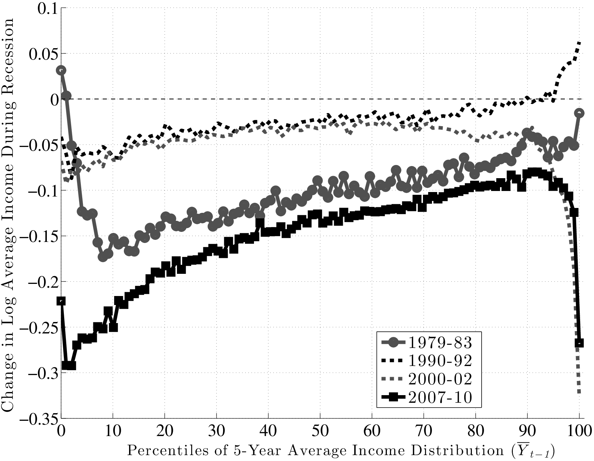
We estimate \(f_{2}(\overline{Y}^{i}_{t-1})\) for each recession and expansion and separately for each of the six age groups defined above. As we show in Appendix B.3, the four age groups between ages 35 and 54 behave similarly to each other over the business cycle. Motivated by this finding, from this point on we combine these individuals into one group and refer to them as “prime-age males.” We also combine the first two age groups and refer to them as “young workers” (ages 25 to 34). For brevity, we focus on prime-age males in the main text and present the results for young workers in Appendix B.3.
Recessions
Figure 13 plots \(f_{2}\) for the four recessions during our sample period. For the Great Recession (black line with squares), \(f_{2}\) is upward sloping in an almost linear fashion and rises by about 17 log points between the 10th and 90th percentiles of \(\overline{Y}^{i}_{t-1}\). So, workers with pre-recession average earnings in the 10th percentile saw their earnings decline by about 25 log points during the recession, compared with a decline of only 8 log points for workers in the 90th percentile.19 Clearly, this factor structure leads to a significant widening of earnings inequality over much of the distribution. However, this good fortune of high-income individuals does not extend to the very top: \(f_{2}\) first flattens beyond the 90th percentile and then for the top 1 percent, it actually falls steeply. Specifically, these individuals experienced an average loss of 27 log points compared with 12.5 log points for those in the second highest percentile. One conclusion we draw is that individuals near the 90th percentile of the average earnings distribution (about $100,000 per year) as of 2006 have suffered the smallest loss of any earnings group.
Turning to the other major recession in our sample—the 1979–83 episode—\(f_{2}\) looks similar to the Great Recession period between the 10th percentile and about the 95th percentile, with the same linear shape and a slightly smaller slope. However, for individuals with the lowest average earnings (below the 10th percentile), the graph is downward sloping, indicating some mean reversion during the recession.20 Also, and perhaps surprisingly, there is no steep fall in earnings for the top 1 percent during this recession. In fact, these individuals fared better than any other income group during this period. Overall, however, for the majority of workers, the 1979–83 recession was quite similar to—slightly milder than—the Great Recession, in terms of both its between-group implications and its average effect.
As for the remaining two recessions during this period, both of them feature modest falls in average earnings—about 3 log points for the median individual in these graphs. The 1990–92 recession also features mild but clear between-group differences, with \(f_{2}\) rising linearly by about 7 log points between the 10th and 90th percentiles.21 The 2000–02 recession overlaps remarkably well with the former up to about the 70th percentile and then starts to diverge downward. In particular, there is a sharp drop after the 90th percentile. In fact, for the top 1 percent, this recession turns out to have the worst outcomes of all recessions—an average drop of 33 log points in two years!
Inspecting the behavior of \(f_{2}\) above the 90th percentile reveals an interesting pattern. For the earlier two recessions, very high-income individuals fared better than anybody, whereas for the latest two recessions, there has been a reversal of fortunes, and this group has suffered the most.
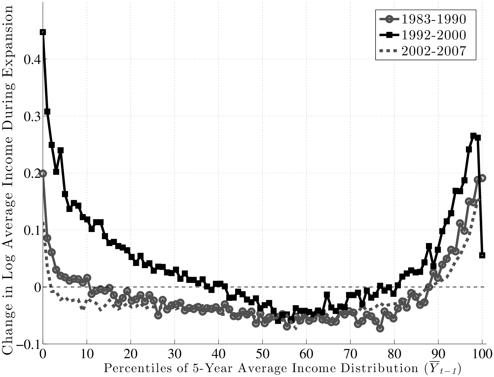
To summarize, there is a clear systematic pattern to individual earnings growth during recessions. For all but the highest earnings groups, earnings loss during a recession decreases almost linearly with the pre-recession earnings level. The slope of this relationship also varies with the severity of the recession: the severe recessions of 1979–83 and 2007–10 saw a gap between the 90th and 10th percentiles in the range of 15 log points, whereas the milder recessions of 1990–92 and 2000–02 saw a gap of 4–7 log points. Second, the fortunes of very high-income individuals require a different classification, one that varies over time: more recent recessions have seen substantial earnings losses for high-income individuals, unlike anything seen in previous ones. Below we will further explore the behavior of the top 1 percent over the business cycle.
Expansions
Unlike recessions, \(f_{2}\) is U-shaped during expansions (Figure 14). In particular, for workers who enter an expansion with average earnings above the 70th percentile, \(f_{2}\) is an upward sloping function, indicating further spreading out of the earnings distribution at the top. For workers with earnings below the median before the expansion, the pattern of earnings growth varied across expansions. The 1990s expansion was the most favorable, with a strong mean reversion raising the incomes of workers at the lower end relative to the median. The other two expansions showed little factor structure in favor of low-income workers—the function is quite flat, indicating that earnings changes were relatively unrelated to past earnings.
The pronounced U-shape in the 1990s can be viewed as a stronger version of what Autor et al. (2006) called “wage polarization” during this period. Basically, these authors compared the percentiles of the wage distribution at different points in time and concluded that the lower and higher percentiles grew more during the 1990s than the middle percentiles. Figure 14 goes one step further by following the same individuals over time and showing that it is precisely those individuals whose pre-1990s earnings were lowest and highest that experienced the fastest growth during the 1990s.
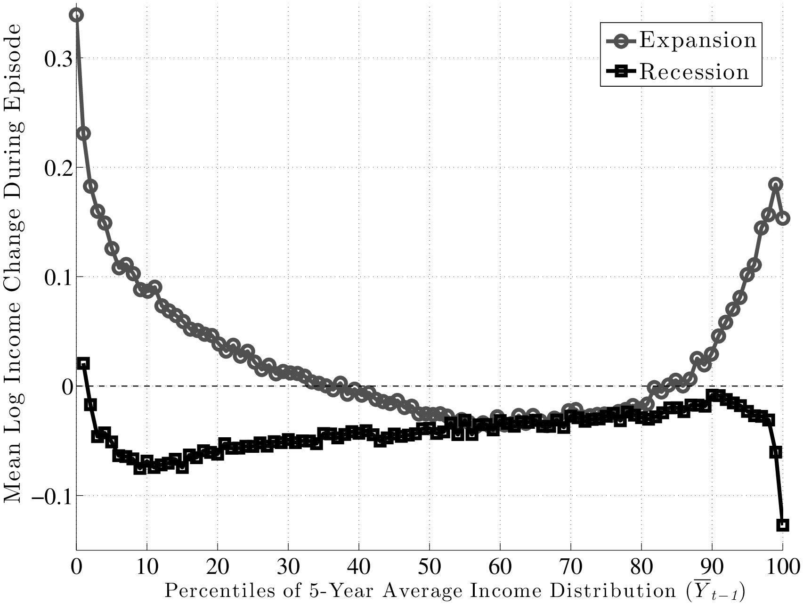
Putting Recessions and Expansions Together
To summarize these patterns, Figure 15 aggregates \(f_{2}\) across all six age groups (ages 25–54) and combines separate recessions and expansions. Overall, \(f_{2}\) is U-shaped during expansions, indicating a compression of the earnings distribution at the bottom and expansion at the top. In contrast, recessions reveal an upward-sloping figure, implying a widening of the entire distribution except at the very top (above the 95th percentile). Thus, the main systematic component of business cycle risk is felt below the median and at the very top, two groups where incomes rise fast in expansions and fall hard during recessions. Put together, these factor structures seen in Figure 15 explain how the earnings distribution expands in recessions and contracts in expansions (resulting in countercyclical earnings inequality) without within-group (idiosyncratic) shocks having countercyclical variances.
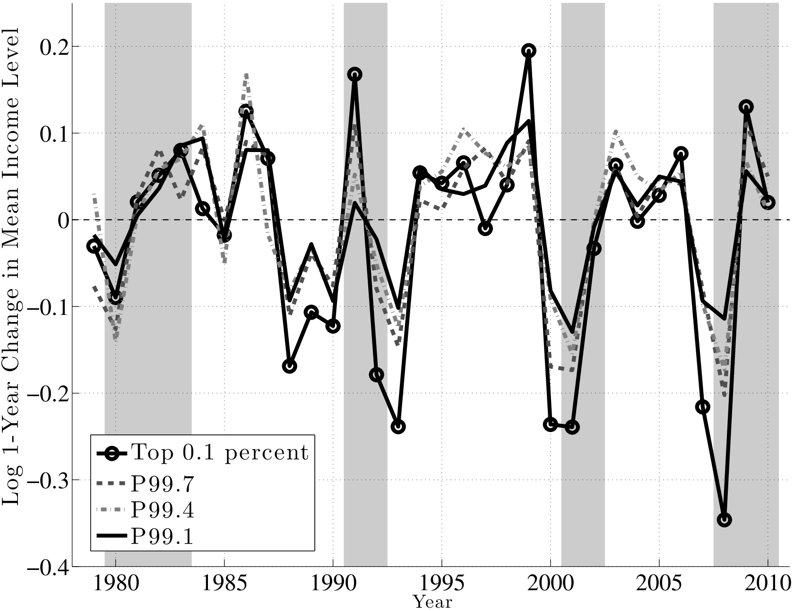
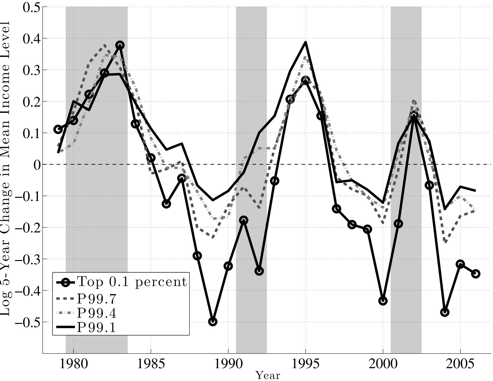
6.2 The Top 1 Percent
Before concluding this section, we now take a closer look at top earners. To understand the differences and similarities within the top 1 percent, we divide this group into 10 quantiles and focus on the 1st, 4th, 7th, and 10th quantiles, denoted by P99.1, P99.4, P99.7, and the top 0.1 percent. Figure 16 (top panel) plots the annual change using the \(f_{2}\) measure for each of these quantiles. First, notice that the four groups move quite closely to each other until the late 1980s, after which point a clear ranking emerges: higher quantiles become more cyclical than lower ones. In particular, individuals in higher quantiles have seen their earnings plummet in recessions relative to lower quantiles, but did not see a larger bounce-back in the subsequent expansion, which would have allowed them to catch up. In fact, during expansions, the average earnings in each group grew by similar amounts.
The implication is that these differential losses during recessions across earnings quantiles are also persistent (Figure 16, bottom): individuals who were in the top 0.1 percent as of 1999 saw their earnings fall by an average of 50 log points between 2000 and 2005! Similarly large losses were experienced by the same group from 1989 to 1994 and from 2004 to 2009. By comparison, the 5-year loss for those in P99.1 ranges from 10 to 20 log points during these recessions. Thus, cyclicality increases strongly with the level of earnings.22
7 Countercyclical Risk: Parametric Estimates
The nonparametric nature of the preceding analysis was essential for establishing our main empirical results by imposing as few assumptions as possible. At the same time, an important use of these empirical results is for calibrating economic models, for which parametric estimates are indispensable. With this in mind, this section provides parametric estimates of business cycle risk that can serve as inputs into quantitative models.
An important challenge we face in this task could be partly anticipated from the results established so far: earnings growth rates display important deviations from normality, which makes higher order moments matter for earnings risk. Guvenen et al. (2013) show that an econometric process that aims to fully capture these features would have to be very complex. Estimating such a process—while also allowing for business cycle risk (which Guvenen et al. (2013) abstract from)—is beyond the scope of this paper. Furthermore, such a complex process would not be suitable for calibrating most economic models, where parsimony is of paramount importance. With these considerations in mind, we augment the “persistent-plus-transitory” specification (commonly used in the earnings dynamics literature) with an error structure featuring a mixture of normals. Specifically:
\[ \begin{aligned} y^{i}_{t} & = & z^{i}_{t}+\varepsilon ^{i}_{t}\\ z^{i}_{t} & = & \rho z^{i}_{t-1}+\eta ^{i}_{t}, \end{aligned} \]
where \(\varepsilon ^{i}_{t}\sim \mathcal{N}(0,\sigma _{\varepsilon})\) and
\[ \begin{aligned} \eta ^{i}_{t} & = & \begin{cases} \eta ^{i}_{1,t}\sim \mathcal{N}(\mu _{1s(t)},\sigma _{1}) & \quad \text{w.p.}\quad p_{1}\\ \eta ^{i}_{2,t}\sim \mathcal{N}(\mu _{2s(t)},\sigma _{2}) & \quad \text{w.p}.\quad 1-p_{1} \end{cases}. \end{aligned} \]
The subscript \(s(t)=E,R\) indicates whether \(t\) is an expansion or a recession year ($R=$1980–83, 1991–92, 2001–02, 2008–10). This specification allows for deviations from normality—e.g., negative skewness and excess kurtosis—in earnings growth rates. Business cycle variation enters through changes in the means of the normal distributions \((\mu _{1s},\mu _{2s})\).23
| Parameters | Model 1 | Model 2 | Model 3 | Model 4 |
| Baseline | ||||
| \(\rho\) | 0.979 | 0.999 | 0.967 | 0.953 |
| \(p_{1}\) | 0.490 | 0.473 | 0.896 | 1.00\(^{*}\) |
| \(\mu _{1E}\) | 0.119 | 0.088 | 0.067 | 0.065 |
| \(\mu _{2E}\) | –0.026 | –0.011 | –0.026 | — |
| \(\mu _{1R}\) | –0.102 | –0.186 | 0.039 | 0.010 |
| \(\mu _{2R}\) | 0.094 | 0.065 | –0.317 | — |
| \(\sigma _{1}\) | 0.325 | 0.327 | 0.185 | \(0.242(\text{E)}/0.247\text{(R)}\) |
| \(\sigma _{2}\) | 0.001 | 0.017 | 0.493 | — |
| \(\sigma _{\varepsilon}\) | 0.186 | 0.193 | 0.187 | 0.173 |
For our baseline case (Model 1), we estimate the vector of parameters (,p_{1},{1E},{2E},{1R},{2R},{1},{2},_{}) by targeting (i) the mean, (ii) P90, (iii) P50, and (iv) P10 of 1-, 3-, and 5-year earnings changes, for a total of 372 moments.24 We use a method of simulated moments estimator where each moment is the percentage deviation between a data target and the corresponding simulated statistic. Appendix C contains further details of the estimation method (and reports all the data series used in the estimation to allow replication).
The parameter estimates are reported in the second column of Table I. A few points are worth noting. First, the two innovations are mixed with almost equal probability (\(p_{1}=0.49\)). Second, one of the two normal innovations is fairly large (\(\sigma _{1}=0.325\)), whereas the second one is drawn from a nearly degenerate distribution: \(\sigma _{2}=0.001\). Although these figures may seem a bit strange at first blush, they are in fact consistent with a plausible economic environment where \(\eta ^{i}_{1}\) and \(\eta ^{i}_{2}\) represent between-job and within-job earnings changes, respectively. In a given year, some workers do not change jobs, and their earnings growth is determined mainly by aggregate factors (such as GDP growth and inflation) and leading to earnings moving together by an amount roughly equal to \(\mu _{2s}\). The rest of the population changes jobs and draws a new wage/earnings, \(\eta ^{i}_{1}\), and such changes have large dispersion. This structure has found empirical support in previous work (e.g., Topel and Ward (1992) and Low et al. (2010)), and our results provide further support for it.
An alternative way to write this process is by considering the limiting case of \(\sigma _{2}=0\). Define \(\lambda _{t}\equiv \eta ^{i}_{2,t}=\mu _{2s(t)}\) to be an aggregate shock experienced by all workers, and modify (2) to read \(z^{i}_{t}=\rho z^{i}_{t-1}+\lambda _{t}+\eta ^{i}_{1,t}.\) In addition, each individual faces a Poisson arrival process for the idiosyncratic shock: \(\eta ^{i}_{1,t}\sim \mathcal{N}(\mu _{1s(t)}-\mu _{2s(t)},\sigma _{1})\) with probability \(p_{1}\) and is zero otherwise. This structure generates the same probability distribution for \(y^{i}_{t}\) as (1)–(3).
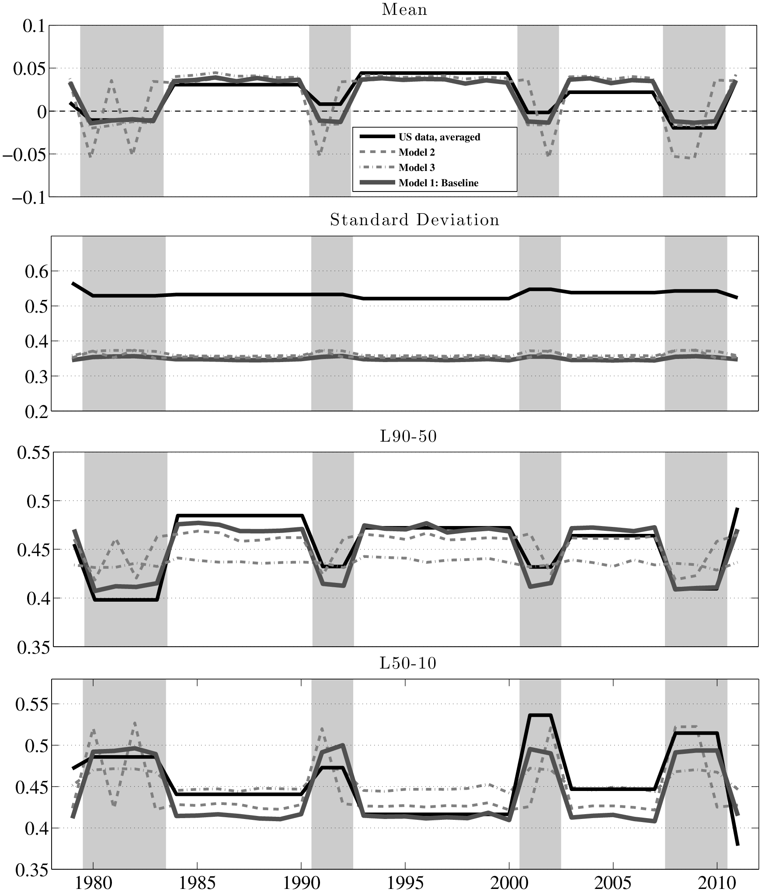
Now we turn to business cycle variation in earnings risk. Figure 17 plots the fit of the baseline model (thick solid grey line) to the four sets of moments of \(y^{i}_{t}-y^{i}_{t-1}\): mean, standard deviation, L90-50, and L50-10 (top to bottom). Because the estimated process allows for time variation only across expansions and recessions, it makes sense to also plot the US data by averaging each statistic over each business cycle episode (plotted as the thick black solid line). The baseline model captures (i) the consistent dip in the mean earnings growth rate in every recession, as well as (ii) the dip in L90-50 and (iii) the rise in L50-10 in recessions. Consequently, the model matches the countercyclical left-skewness seen in the data fairly well, as seen in the top panel of Figure 18, which plots Kelley’s skewness measure. As for the standard deviation, the baseline model fails to match its high level; however, it does nicely capture the lack of cyclicality observed in the data (second panel of Figure 17). Finally, Figure 19 plots the histograms of \(y^{i}_{t}-y^{i}_{t-1}\) generated by the baseline model, which shows the same kind of shift in the distribution of shocks as Figure 1 anticipated.
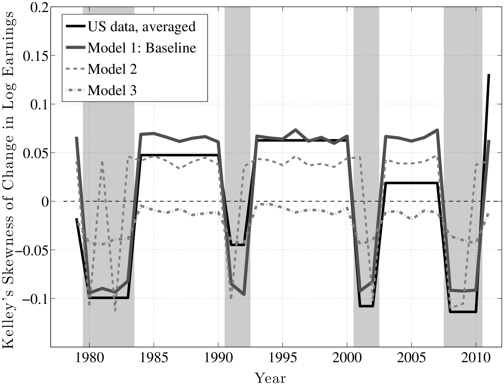
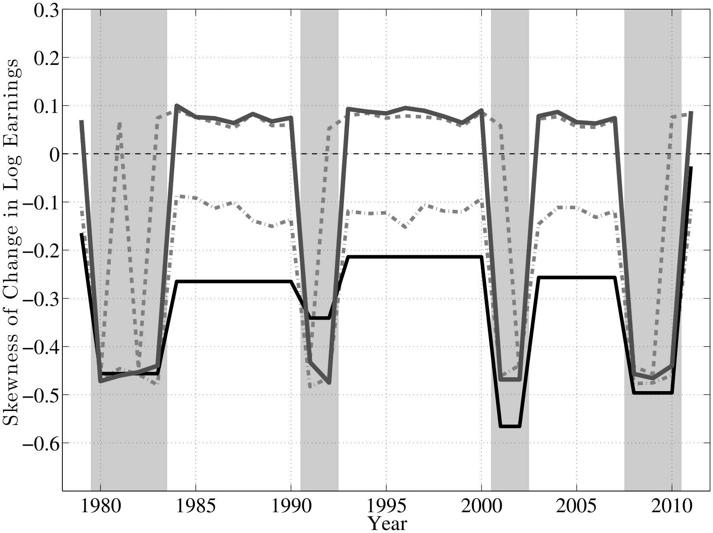
One assumption we made in Model 1 was to identify recessions with NBER business cycle dates. Although this assumption is not controversial, as discussed earlier, it is not perfect either. Model 2 considers a plausible alternative, which essentially classifies year \(t\) as a recession if average earnings growth in our sample was negative in that year (as reported in Table II). This assumption yields a smaller set of recession years: \(R=1980,1982,1991,2002,2008,2009\). Figure 17 plots the statistics from Model 2 as the dashed grey line. Overall, the results look quite similar to the baseline, but this specification seems to match the ups and downs during some some recessions better (compare it with the raw data graphs in Figures 4, 5, and 6).
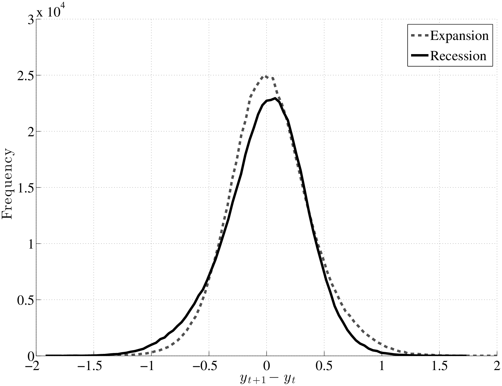
Although both Models 1 and 2 match the level and cyclicality of the Kelley’s skewness well, they both overestimate the level of the third central moment, which is plotted in the bottom panel of Figure 18. This is because the latter is heavily influenced by the thick tails of the U.S. earnings growth distribution, which the estimated processes fail to fully capture.25 To see if this can be remedied, in Model 3, we add the third central moment (again, of 1-, 3,- and 5-year changes) to the set of targets used for Model 1. The estimated parameters are reported in Table I and the grey dashed-dotted line in Figure 17 plots the simulated moments. As seen here, while the mean and standard deviation are unaffected by this change, Model 3 fails to generate sufficient cyclicality in L90-50 and L50-10 and, consequently, in Kelley’s skewness. Model 3 does, however, match the lower level of the third central moment better than Models 1 and 2. Nevertheless, we do not view this as a sufficient reason to move away from our preferred baseline, because the movements of L90-50 and L50-10 affect the nature of the shocks faced by the bulk of the population, and Models 1 and 2 match them quite well.
Before concluding this section, it seems useful, for completeness, to estimate the process considered by Storesletten et al. (2004). To this end, we set \(p_{1}=1\) (which eliminates \(\eta ^{i}_{2,t}\), thereby reducing the process for \(y^{i}_{t}\) to a normal distribution) and further allow the innovation variance \(\sigma _{1}\) to change between recessions and expansions. Clearly, this process implies zero skewness by assumption, so the only substantive issue is whether the variance changes over the business cycle. We continue to target the same set of moments as in Model 1. As seen in the last column, \(\sigma _{1}\) barely moves, rising slightly from 0.242 to 0.247 from expansion to recession, consistent with our nonparametric finding from Section 5 that the variance of persistent shocks is acyclical.
8 Discussion and Conclusions
This paper has studied between- and within-group variation in earnings growth rates over the business cycle. Using a large and confidential panel dataset with little measurement error, it has documented three sets of empirical facts.
Our first set of findings concerns the cyclical nature of idiosyncratic shocks. During recessions, the upper end of the shock distribution collapses—that is, large upward earnings movements become less likely—whereas the bottom end expands—i.e., large drops in earnings become more likely. Moreover, the center of the shock distribution (i.e., the median) is stable and moves little compared with either tail. What does change (more significantly) is the behavior of the tails, which swing back and forth in unison over the business cycle. These swings lead to cyclical changes in skewness, but not so much in overall dispersion. We conclude that recessions are best viewed as a small negative shock to the median and a large negative shock to the skewness of the idiosyncratic earnings shock distribution, with little change in the variance.
What accounts for the different conclusions reached by Storesletten et al. (2004) and this paper? A definitive answer would require an exact replication of that paper with our dataset and a step-by-step elimination of each potential source of difference. While this step is beyond the scope of this paper, it is useful to point out some of the key differences that could potentially be responsible. First, that paper assumes an AR(1) specification for shocks, which restricts skewness to zero. Second, in their estimation, the only parameter of the econometric process that is allowed to vary over the business cycle is the variance of shocks. Given that earnings level inequality is countercyclical (which is also true in our sample—see Figure A.3), the estimated variance would have to rise during recessions to account for the rising inequality. Furthermore, they assume that shock variances display no secular trend (from 1910 to 1993), despite much empirical evidence finding low frequency movements in variances. Any one of these three identifying assumptions could potentially lead to a finding of countercyclical variance, since it is the only parameter that is allowed to vary in their estimation.26
Second, we examined the systematic component of business cycle risk. The pre-episode average earnings level turns out to predict a worker’s earnings growth during subsequent business cycle episodes. During recessions, earnings growth is an increasing function of past earnings (except for very top earners), whereas during expansions it is a U-shaped function. Between group differences are large and systematic. Put together, these factor structures are consistent with countercyclical earnings inequality without needing within-group (idiosyncratic) shocks that have countercyclical variances.
Third, the one deviation we find from these simple patterns is a remarkable nonlinearity for individuals who enter a recession with very high earnings—those in the top 1 percent. During the last two recessions, these individuals have experienced enormous and persistent earnings losses (about 30 log points), which dwarfs the losses of individuals even with slightly lower earnings. In fact, individuals who entered the last three recessions in the top 0.1 percent of the earnings distribution had earnings levels five years later that were at least 50 log points lower than their pre-recession levels.
Overall, these empirical findings have important implications for how we think about earnings risk over the business cycle. The traditional approach to modeling recession risk consists of a (negative) aggregate shock and a positive shock to the variance of idiosyncratic shocks. Our results suggest that this simple view is inadequate. Instead, they turn our focus to the countercyclical variation in the third moment (skewness) of idiosyncratic shocks as central to understanding how the fortunes of ex ante similar individuals fare during recessions. Even the change in mean earnings (which we think of as an aggregate shock) is largely driven by the change in skewness. In addition, the factor structure results imply that business cycle risk is not entirely a surprise or a shock, but it has a component that can be predicted based on information available to both individuals and economists at the beginning of business cycle episodes.
Online Appendix to “The Nature of Countercyclical Income Risk”
9 Data Appendix
| Year | Median | Mean | Change in | Change in | Average | Number of |
| earnings | earnings | log average | log earnings, | age | observations | |
| (in constant 2005 dollars) | earnings per | averaged over | ||||
| person \(\times 100\) | workers \(\times 100\) | |||||
| 1978 | 39,489 | 47,939 | — | — | 39.3 | 3,640,646 |
| 1979 | 38,972 | 46,209 | –1.37 | 1.10 | 39.3 | 3,797,110 |
| 1980 | 37,572 | 44,637 | –3.16 | –3.12 | 39.2 | 3,901,639 |
| 1981 | 37,908 | 44,786 | 0.81 | 2.00 | 39.1 | 4,010,851 |
| 1982 | 36,645 | 44,161 | –4.39 | –3.26 | 39.1 | 3,977,141 |
| 1983 | 36,432 | 44,277 | –0.37 | 0.58 | 39.0 | 4,020,277 |
| 1984 | 36,848 | 45,761 | 3.17 | 6.53 | 38.9 | 4,090,227 |
| 1985 | 37,010 | 46,772 | 3.90 | 4.40 | 38.9 | 4,242,948 |
| 1986 | 37,101 | 48,063 | 2.72 | 3.68 | 38.9 | 4,311,002 |
| 1987 | 36,789 | 47,662 | 0.04 | 1.78 | 38.9 | 4,423,380 |
| 1988 | 36,330 | 48,481 | 2.83 | 3.85 | 38.9 | 4,552,404 |
| 1989 | 35,615 | 46,573 | –3.29 | 0.62 | 39.0 | 4,670,368 |
| 1990 | 35,207 | 46,263 | –1.37 | 1.06 | 39.1 | 4,722,995 |
| 1991 | 34,452 | 45,766 | –1.67 | –1.30 | 39.3 | 4,768,322 |
| 1992 | 34,688 | 47,194 | 1.89 | 2.98 | 39.4 | 4,772,586 |
| 1993 | 34,661 | 47,471 | 0.35 | 3.33 | 39.6 | 4,829,843 |
| 1994 | 34,231 | 44,816 | –5.54 | 2.00 | 39.7 | 4,904,678 |
| 1995 | 34,281 | 45,645 | 2.55 | 3.85 | 39.9 | 5,000,567 |
| 1996 | 34,864 | 46,731 | 2.21 | 3.88 | 40.1 | 5,045,729 |
| 1997 | 35,874 | 48,898 | 5.07 | 6.38 | 40.3 | 5,134,047 |
| 1998 | 37,351 | 51,349 | 5.09 | 7.06 | 40.6 | 5,198,878 |
| 1999 | 37,900 | 52,846 | 3.66 | 4.43 | 40.8 | 5,284,067 |
| 2000 | 38,526 | 55,030 | 4.75 | 4.35 | 41.0 | 5,366,874 |
| 2001 | 39,011 | 55,283 | –0.20 | 1.93 | 41.2 | 5,376,382 |
| 2002 | 38,412 | 52,894 | –6.01 | –2.36 | 41.3 | 5,316,315 |
| 2003 | 38,187 | 53,146 | 0.00 | 0.55 | 41.5 | 5,302,976 |
| 2004 | 38,372 | 53,366 | 0.35 | 2.16 | 41.6 | 5,329,828 |
| 2005 | 38,196 | 53,586 | 0.50 | 2.12 | 41.7 | 5,359,742 |
| 2006 | 38,456 | 54,536 | 2.11 | 3.30 | 41.8 | 5,389,889 |
| 2007 | 38,526 | 55,322 | 1.52 | 2.44 | 41.8 | 5,404,929 |
| 2008 | 37,932 | 53,891 | –3.87 | –1.03 | 41.9 | 5,399,739 |
| 2009 | 37,015 | 51,989 | –8.64 | –6.51 | 42.0 | 5,230,315 |
| 2010 | 36,970 | 52,610 | 0.20 | 1.37 | 42.1 | 5,153,986 |
| 2011 | 36,593 | 52,713 | –2.17 | 3.34 | 42.0 | 5,228,171 |
| Annual Wage and Salary Earnings | ||||
| Year: | Mean (log) | Std. Dev. (log) | Skewness (log) | Max. Earnings\(\dagger\) |
| 1978 | 10.456 | 0.845 | –0.756 | 5,629,944 |
| 1979 | 10.442 | 0.820 | –0.789 | 3,043,717 |
| 1980 | 10.398 | 0.830 | –0.776 | 3,900,245 |
| 1981 | 10.406 | 0.837 | –0.827 | 3,191,016 |
| 1982 | 10.372 | 0.858 | –0.751 | 3,164,862 |
| 1983 | 10.357 | 0.880 | –0.744 | 3,350,164 |
| 1984 | 10.376 | 0.887 | –0.703 | 5,649,401 |
| 1985 | 10.386 | 0.895 | –0.669 | 5,997,840 |
| 1986 | 10.393 | 0.917 | –0.621 | 5,518,408 |
| 1987 | 10.380 | 0.909 | –0.631 | 8,836,576 |
| 1988 | 10.378 | 0.925 | –0.586 | 10,323,465 |
| 1989 | 10.352 | 0.916 | –0.632 | 7,963,985 |
| 1990 | 10.339 | 0.928 | –0.645 | 8,436,263 |
| 1991 | 10.324 | 0.930 | –0.571 | 7,671,786 |
| 1992 | 10.337 | 0.931 | –0.499 | 11,382,868 |
| 1993 | 10.341 | 0.939 | –0.494 | 9,824,305 |
| 1994 | 10.325 | 0.913 | –0.601 | 7,380,117 |
| 1995 | 10.335 | 0.917 | –0.569 | 7,761,374 |
| 1996 | 10.352 | 0.918 | –0.565 | 10,145,898 |
| 1997 | 10.393 | 0.912 | –0.493 | 11,928,487 |
| 1998 | 10.441 | 0.904 | –0.458 | 14,686,511 |
| 1999 | 10.458 | 0.908 | –0.442 | 18,190,499 |
| 2000 | 10.476 | 0.915 | –0.418 | 32,008,754 |
| 2001 | 10.487 | 0.931 | –0.452 | 17,144,706 |
| 2002 | 10.457 | 0.936 | –0.530 | 13,885,282 |
| 2003 | 10.453 | 0.947 | –0.524 | 14,023,429 |
| 2004 | 10.454 | 0.943 | –0.530 | 15,811,530 |
| 2005 | 10.453 | 0.944 | –0.519 | 16,138,366 |
| 2006 | 10.462 | 0.949 | –0.509 | 18,897,685 |
| 2007 | 10.465 | 0.958 | –0.498 | 20,177,728 |
| 2008 | 10.450 | 0.952 | –0.475 | 16,907,198 |
| 2009 | 10.417 | 0.962 | –0.472 | 12,540,952 |
| 2010 | 10.423 | 0.956 | –0.401 | 13,983,100 |
| 2011 | 10.419 | 0.959 | –0.379 | 15,374,641 |
| Wage Earnings Percentiles | |||||||||||
| Year: | min | max | P1 | P5 | P10 | P25 | P50 | P75 | P90 | P95 | P99 |
| 1978 | 7.34 | 15.54 | 7.78 | 8.76 | 9.39 | 10.10 | 10.58 | 10.93 | 11.28 | 11.63 | 12.42 |
| 1979 | 7.40 | 14.93 | 7.83 | 8.79 | 9.40 | 10.09 | 10.57 | 10.92 | 11.24 | 11.54 | 12.32 |
| 1980 | 7.39 | 15.18 | 7.79 | 8.72 | 9.32 | 10.04 | 10.53 | 10.89 | 11.21 | 11.49 | 12.29 |
| 1981 | 7.37 | 14.98 | 7.77 | 8.70 | 9.31 | 10.04 | 10.54 | 10.91 | 11.24 | 11.52 | 12.23 |
| 1982 | 7.39 | 14.97 | 7.75 | 8.63 | 9.23 | 9.99 | 10.51 | 10.89 | 11.24 | 11.52 | 12.26 |
| 1983 | 7.35 | 15.03 | 7.70 | 8.56 | 9.17 | 9.96 | 10.50 | 10.90 | 11.25 | 11.52 | 12.27 |
| 1984 | 7.31 | 15.55 | 7.68 | 8.58 | 9.20 | 9.97 | 10.52 | 10.91 | 11.27 | 11.57 | 12.33 |
| 1985 | 7.28 | 15.61 | 7.67 | 8.59 | 9.21 | 9.98 | 10.52 | 10.93 | 11.30 | 11.60 | 12.40 |
| 1986 | 7.26 | 15.52 | 7.64 | 8.57 | 9.19 | 9.97 | 10.52 | 10.94 | 11.33 | 11.68 | 12.47 |
| 1987 | 7.22 | 15.99 | 7.62 | 8.57 | 9.19 | 9.97 | 10.51 | 10.93 | 11.30 | 11.60 | 12.45 |
| 1988 | 7.18 | 16.15 | 7.59 | 8.55 | 9.18 | 9.95 | 10.50 | 10.93 | 11.33 | 11.68 | 12.49 |
| 1989 | 7.14 | 15.89 | 7.56 | 8.54 | 9.16 | 9.93 | 10.48 | 10.91 | 11.28 | 11.59 | 12.44 |
| 1990 | 7.10 | 15.95 | 7.52 | 8.50 | 9.13 | 9.91 | 10.47 | 10.91 | 11.29 | 11.59 | 12.42 |
| 1991 | 7.19 | 15.85 | 7.57 | 8.50 | 9.10 | 9.87 | 10.45 | 10.90 | 11.29 | 11.60 | 12.43 |
| 1992 | 7.27 | 16.25 | 7.63 | 8.51 | 9.11 | 9.88 | 10.45 | 10.91 | 11.31 | 11.62 | 12.48 |
| 1993 | 7.25 | 16.10 | 7.61 | 8.51 | 9.11 | 9.88 | 10.45 | 10.92 | 11.33 | 11.66 | 12.51 |
| 1994 | 7.23 | 15.81 | 7.61 | 8.53 | 9.13 | 9.88 | 10.44 | 10.90 | 11.29 | 11.58 | 12.35 |
| 1995 | 7.21 | 15.87 | 7.60 | 8.54 | 9.14 | 9.89 | 10.44 | 10.90 | 11.31 | 11.61 | 12.40 |
| 1996 | 7.18 | 16.13 | 7.60 | 8.56 | 9.17 | 9.91 | 10.46 | 10.92 | 11.33 | 11.63 | 12.44 |
| 1997 | 7.28 | 16.29 | 7.69 | 8.64 | 9.23 | 9.95 | 10.49 | 10.95 | 11.37 | 11.69 | 12.51 |
| 1998 | 7.35 | 16.50 | 7.76 | 8.71 | 9.30 | 10.00 | 10.53 | 10.98 | 11.41 | 11.74 | 12.56 |
| 1999 | 7.33 | 16.72 | 7.76 | 8.73 | 9.32 | 10.02 | 10.54 | 11.00 | 11.44 | 11.76 | 12.60 |
| 2000 | 7.31 | 17.28 | 7.75 | 8.74 | 9.33 | 10.04 | 10.56 | 11.01 | 11.46 | 11.79 | 12.65 |
| 2001 | 7.29 | 16.66 | 7.73 | 8.71 | 9.31 | 10.04 | 10.57 | 11.04 | 11.50 | 11.83 | 12.66 |
| 2002 | 7.28 | 16.45 | 7.68 | 8.64 | 9.24 | 10.01 | 10.56 | 11.03 | 11.47 | 11.79 | 12.57 |
| 2003 | 7.26 | 16.46 | 7.66 | 8.61 | 9.22 | 10.00 | 10.55 | 11.03 | 11.49 | 11.81 | 12.57 |
| 2004 | 7.23 | 16.58 | 7.65 | 8.62 | 9.23 | 10.00 | 10.56 | 11.03 | 11.47 | 11.78 | 12.59 |
| 2005 | 7.20 | 16.60 | 7.63 | 8.63 | 9.24 | 10.00 | 10.55 | 11.03 | 11.47 | 11.79 | 12.61 |
| 2006 | 7.17 | 16.76 | 7.62 | 8.64 | 9.25 | 10.01 | 10.56 | 11.03 | 11.49 | 11.81 | 12.64 |
| 2007 | 7.15 | 16.82 | 7.60 | 8.63 | 9.24 | 10.01 | 10.56 | 11.04 | 11.50 | 11.83 | 12.67 |
| 2008 | 7.24 | 16.64 | 7.66 | 8.62 | 9.22 | 9.98 | 10.54 | 11.03 | 11.49 | 11.81 | 12.63 |
| 2009 | 7.35 | 16.35 | 7.69 | 8.55 | 9.13 | 9.93 | 10.52 | 11.02 | 11.48 | 11.79 | 12.56 |
| 2010 | 7.44 | 16.45 | 7.76 | 8.59 | 9.15 | 9.93 | 10.52 | 11.02 | 11.49 | 11.80 | 12.60 |
| 2011 | 7.41 | 16.55 | 7.75 | 8.59 | 9.15 | 9.92 | 10.51 | 11.02 | 11.49 | 11.81 | 12.62 |
| Year: | P10 | P25 | P50 | P75 | P90 | P95 | P99 |
| 1978 | 8.74 | 9.54 | 10.06 | 10.46 | 10.76 | 10.96 | 11.71 |
| 1979 | 8.77 | 9.54 | 10.06 | 10.45 | 10.74 | 10.90 | 11.46 |
| 1980 | 8.69 | 9.47 | 10.01 | 10.41 | 10.70 | 10.85 | 11.30 |
| 1981 | 8.65 | 9.45 | 10.00 | 10.41 | 10.72 | 10.89 | 11.38 |
| 1982 | 8.57 | 9.37 | 9.94 | 10.36 | 10.68 | 10.85 | 11.29 |
| 1983 | 8.51 | 9.31 | 9.90 | 10.32 | 10.65 | 10.83 | 11.24 |
| 1984 | 8.56 | 9.35 | 9.91 | 10.32 | 10.65 | 10.83 | 11.28 |
| 1985 | 8.56 | 9.35 | 9.91 | 10.32 | 10.65 | 10.83 | 11.26 |
| 1986 | 8.55 | 9.34 | 9.91 | 10.32 | 10.65 | 10.83 | 11.34 |
| 1987 | 8.54 | 9.33 | 9.90 | 10.30 | 10.63 | 10.81 | 11.25 |
| 1988 | 8.54 | 9.32 | 9.89 | 10.29 | 10.62 | 10.80 | 11.26 |
| 1989 | 8.52 | 9.31 | 9.87 | 10.28 | 10.60 | 10.79 | 11.22 |
| 1990 | 8.47 | 9.27 | 9.85 | 10.26 | 10.59 | 10.77 | 11.18 |
| 1991 | 8.46 | 9.20 | 9.79 | 10.21 | 10.55 | 10.73 | 11.15 |
| 1992 | 8.46 | 9.20 | 9.79 | 10.20 | 10.53 | 10.74 | 11.21 |
| 1993 | 8.45 | 9.20 | 9.79 | 10.20 | 10.55 | 10.77 | 11.28 |
| 1994 | 8.48 | 9.22 | 9.79 | 10.18 | 10.50 | 10.69 | 11.11 |
| 1995 | 8.47 | 9.23 | 9.80 | 10.19 | 10.51 | 10.70 | 11.14 |
| 1996 | 8.50 | 9.24 | 9.82 | 10.21 | 10.53 | 10.72 | 11.18 |
| 1997 | 8.56 | 9.30 | 9.85 | 10.25 | 10.58 | 10.79 | 11.29 |
| 1998 | 8.63 | 9.36 | 9.92 | 10.32 | 10.65 | 10.86 | 11.35 |
| 1999 | 8.64 | 9.38 | 9.94 | 10.35 | 10.68 | 10.89 | 11.37 |
| 2000 | 8.64 | 9.40 | 9.97 | 10.38 | 10.72 | 10.93 | 11.45 |
| 2001 | 8.60 | 9.36 | 9.97 | 10.40 | 10.75 | 10.98 | 11.52 |
| 2002 | 8.52 | 9.29 | 9.92 | 10.35 | 10.69 | 10.91 | 11.36 |
| 2003 | 8.48 | 9.25 | 9.89 | 10.32 | 10.66 | 10.87 | 11.34 |
| 2004 | 8.48 | 9.26 | 9.89 | 10.31 | 10.65 | 10.85 | 11.28 |
| 2005 | 8.48 | 9.27 | 9.88 | 10.31 | 10.65 | 10.86 | 11.30 |
| 2006 | 8.49 | 9.27 | 9.90 | 10.32 | 10.67 | 10.88 | 11.32 |
| 2007 | 8.49 | 9.28 | 9.90 | 10.34 | 10.69 | 10.90 | 11.35 |
| 2008 | 8.49 | 9.25 | 9.88 | 10.32 | 10.69 | 10.90 | 11.32 |
| 2009 | 8.41 | 9.15 | 9.81 | 10.27 | 10.64 | 10.86 | 11.25 |
| 2010 | 8.45 | 9.15 | 9.77 | 10.23 | 10.60 | 10.83 | 11.24 |
| 2011 | 8.44 | 9.14 | 9.75 | 10.21 | 10.59 | 10.82 | 11.24 |
| Year: | P10 | P25 | P50 | P75 | P90 | P95 | P99 |
| 1978 | 9.53 | 10.21 | 10.65 | 10.96 | 11.28 | 11.61 | 12.35 |
| 1979 | 9.51 | 10.19 | 10.63 | 10.94 | 11.24 | 11.51 | 12.24 |
| 1980 | 9.46 | 10.15 | 10.60 | 10.91 | 11.20 | 11.44 | 12.17 |
| 1981 | 9.46 | 10.16 | 10.61 | 10.92 | 11.22 | 11.47 | 12.13 |
| 1982 | 9.34 | 10.09 | 10.55 | 10.89 | 11.20 | 11.45 | 12.11 |
| 1983 | 9.26 | 10.06 | 10.54 | 10.89 | 11.20 | 11.45 | 12.11 |
| 1984 | 9.27 | 10.06 | 10.54 | 10.90 | 11.22 | 11.49 | 12.18 |
| 1985 | 9.29 | 10.06 | 10.54 | 10.91 | 11.24 | 11.51 | 12.22 |
| 1986 | 9.25 | 10.04 | 10.53 | 10.91 | 11.27 | 11.58 | 12.29 |
| 1987 | 9.23 | 10.03 | 10.52 | 10.90 | 11.24 | 11.51 | 12.22 |
| 1988 | 9.22 | 10.01 | 10.51 | 10.90 | 11.25 | 11.56 | 12.25 |
| 1989 | 9.18 | 9.97 | 10.48 | 10.87 | 11.22 | 11.48 | 12.20 |
| 1990 | 9.16 | 9.94 | 10.46 | 10.87 | 11.22 | 11.48 | 12.18 |
| 1991 | 9.12 | 9.90 | 10.44 | 10.85 | 11.21 | 11.48 | 12.19 |
| 1992 | 9.12 | 9.91 | 10.44 | 10.86 | 11.22 | 11.50 | 12.24 |
| 1993 | 9.11 | 9.90 | 10.43 | 10.86 | 11.24 | 11.52 | 12.26 |
| 1994 | 9.13 | 9.90 | 10.42 | 10.84 | 11.20 | 11.45 | 12.14 |
| 1995 | 9.15 | 9.91 | 10.41 | 10.84 | 11.20 | 11.47 | 12.18 |
| 1996 | 9.16 | 9.92 | 10.43 | 10.85 | 11.22 | 11.49 | 12.23 |
| 1997 | 9.23 | 9.95 | 10.45 | 10.87 | 11.27 | 11.56 | 12.30 |
| 1998 | 9.29 | 10.00 | 10.49 | 10.92 | 11.32 | 11.62 | 12.33 |
| 1999 | 9.30 | 10.02 | 10.50 | 10.93 | 11.35 | 11.65 | 12.39 |
| 2000 | 9.34 | 10.05 | 10.53 | 10.95 | 11.39 | 11.70 | 12.46 |
| 2001 | 9.32 | 10.05 | 10.54 | 10.99 | 11.44 | 11.75 | 12.47 |
| 2002 | 9.26 | 10.02 | 10.54 | 10.98 | 11.40 | 11.70 | 12.38 |
| 2003 | 9.25 | 10.02 | 10.54 | 10.98 | 11.41 | 11.70 | 12.37 |
| 2004 | 9.28 | 10.04 | 10.55 | 10.99 | 11.40 | 11.68 | 12.38 |
| 2005 | 9.28 | 10.04 | 10.55 | 10.99 | 11.40 | 11.68 | 12.39 |
| 2006 | 9.28 | 10.04 | 10.55 | 10.99 | 11.41 | 11.70 | 12.43 |
| 2007 | 9.29 | 10.04 | 10.55 | 11.01 | 11.42 | 11.70 | 12.42 |
| 2008 | 9.26 | 10.01 | 10.54 | 11.00 | 11.42 | 11.69 | 12.39 |
| 2009 | 9.17 | 9.96 | 10.52 | 10.98 | 11.39 | 11.65 | 12.30 |
| 2010 | 9.19 | 9.96 | 10.51 | 10.97 | 11.39 | 11.66 | 12.33 |
| 2011 | 9.18 | 9.94 | 10.49 | 10.97 | 11.39 | 11.66 | 12.33 |
| Year: | P10 | P25 | P50 | P75 | P90 | P95 | P99 |
| 1978 | 9.70 | 10.33 | 10.75 | 11.07 | 11.46 | 11.83 | 12.58 |
| 1979 | 9.69 | 10.32 | 10.74 | 11.06 | 11.42 | 11.76 | 12.54 |
| 1980 | 9.65 | 10.28 | 10.71 | 11.04 | 11.38 | 11.71 | 12.52 |
| 1981 | 9.67 | 10.30 | 10.73 | 11.06 | 11.41 | 11.72 | 12.46 |
| 1982 | 9.58 | 10.26 | 10.71 | 11.06 | 11.43 | 11.75 | 12.53 |
| 1983 | 9.54 | 10.25 | 10.72 | 11.06 | 11.44 | 11.75 | 12.55 |
| 1984 | 9.55 | 10.27 | 10.74 | 11.10 | 11.48 | 11.82 | 12.64 |
| 1985 | 9.59 | 10.29 | 10.76 | 11.12 | 11.52 | 11.87 | 12.76 |
| 1986 | 9.59 | 10.30 | 10.78 | 11.15 | 11.60 | 12.01 | 12.81 |
| 1987 | 9.58 | 10.30 | 10.77 | 11.13 | 11.54 | 11.89 | 12.86 |
| 1988 | 9.55 | 10.27 | 10.76 | 11.13 | 11.57 | 11.93 | 12.88 |
| 1989 | 9.52 | 10.24 | 10.73 | 11.11 | 11.51 | 11.87 | 12.80 |
| 1990 | 9.50 | 10.24 | 10.74 | 11.11 | 11.50 | 11.85 | 12.77 |
| 1991 | 9.48 | 10.21 | 10.72 | 11.10 | 11.50 | 11.86 | 12.73 |
| 1992 | 9.47 | 10.19 | 10.71 | 11.09 | 11.49 | 11.84 | 12.75 |
| 1993 | 9.43 | 10.17 | 10.69 | 11.08 | 11.50 | 11.87 | 12.73 |
| 1994 | 9.41 | 10.14 | 10.66 | 11.06 | 11.44 | 11.76 | 12.58 |
| 1995 | 9.44 | 10.13 | 10.65 | 11.06 | 11.46 | 11.79 | 12.60 |
| 1996 | 9.43 | 10.14 | 10.65 | 11.06 | 11.46 | 11.79 | 12.61 |
| 1997 | 9.45 | 10.15 | 10.67 | 11.08 | 11.49 | 11.84 | 12.68 |
| 1998 | 9.53 | 10.19 | 10.69 | 11.10 | 11.54 | 11.88 | 12.72 |
| 1999 | 9.52 | 10.19 | 10.69 | 11.12 | 11.56 | 11.92 | 12.78 |
| 2000 | 9.51 | 10.19 | 10.69 | 11.13 | 11.58 | 11.95 | 12.85 |
| 2001 | 9.50 | 10.19 | 10.70 | 11.15 | 11.62 | 11.98 | 12.86 |
| 2002 | 9.46 | 10.17 | 10.68 | 11.14 | 11.59 | 11.93 | 12.75 |
| 2003 | 9.43 | 10.16 | 10.68 | 11.15 | 11.62 | 11.95 | 12.77 |
| 2004 | 9.44 | 10.17 | 10.68 | 11.14 | 11.59 | 11.93 | 12.78 |
| 2005 | 9.44 | 10.17 | 10.68 | 11.14 | 11.61 | 11.94 | 12.81 |
| 2006 | 9.46 | 10.18 | 10.69 | 11.16 | 11.63 | 11.96 | 12.87 |
| 2007 | 9.45 | 10.17 | 10.69 | 11.17 | 11.64 | 11.98 | 12.87 |
| 2008 | 9.43 | 10.15 | 10.68 | 11.16 | 11.62 | 11.95 | 12.82 |
| 2009 | 9.33 | 10.10 | 10.66 | 11.15 | 11.61 | 11.92 | 12.75 |
| 2010 | 9.39 | 10.13 | 10.68 | 11.16 | 11.62 | 11.95 | 12.80 |
| 2011 | 9.41 | 10.13 | 10.67 | 11.16 | 11.64 | 11.97 | 12.81 |
| Year: | P10 | P25 | P50 | P75 | P90 | P95 | P99 |
| 1978 | 9.75 | 10.32 | 10.73 | 11.05 | 11.45 | 11.86 | 12.60 |
| 1979 | 9.74 | 10.31 | 10.72 | 11.04 | 11.42 | 11.78 | 12.55 |
| 1980 | 9.69 | 10.28 | 10.70 | 11.02 | 11.39 | 11.73 | 12.55 |
| 1981 | 9.69 | 10.28 | 10.72 | 11.05 | 11.42 | 11.74 | 12.53 |
| 1982 | 9.63 | 10.24 | 10.70 | 11.04 | 11.43 | 11.76 | 12.53 |
| 1983 | 9.58 | 10.24 | 10.71 | 11.06 | 11.43 | 11.76 | 12.57 |
| 1984 | 9.59 | 10.25 | 10.72 | 11.08 | 11.48 | 11.82 | 12.66 |
| 1985 | 9.61 | 10.28 | 10.74 | 11.10 | 11.51 | 11.86 | 12.74 |
| 1986 | 9.55 | 10.25 | 10.74 | 11.12 | 11.57 | 11.98 | 12.78 |
| 1987 | 9.55 | 10.25 | 10.73 | 11.10 | 11.51 | 11.88 | 12.84 |
| 1988 | 9.55 | 10.23 | 10.72 | 11.12 | 11.58 | 11.94 | 12.87 |
| 1989 | 9.53 | 10.21 | 10.70 | 11.08 | 11.50 | 11.87 | 12.86 |
| 1990 | 9.48 | 10.18 | 10.70 | 11.10 | 11.51 | 11.87 | 12.87 |
| 1991 | 9.46 | 10.17 | 10.70 | 11.11 | 11.54 | 11.90 | 12.81 |
| 1992 | 9.46 | 10.17 | 10.71 | 11.12 | 11.56 | 11.95 | 12.91 |
| 1993 | 9.44 | 10.16 | 10.70 | 11.12 | 11.57 | 11.96 | 12.91 |
| 1994 | 9.46 | 10.15 | 10.70 | 11.12 | 11.51 | 11.84 | 12.70 |
| 1995 | 9.46 | 10.16 | 10.70 | 11.13 | 11.55 | 11.89 | 12.74 |
| 1996 | 9.51 | 10.19 | 10.73 | 11.16 | 11.58 | 11.92 | 12.83 |
| 1997 | 9.54 | 10.21 | 10.75 | 11.18 | 11.62 | 11.97 | 12.87 |
| 1998 | 9.58 | 10.23 | 10.76 | 11.20 | 11.64 | 11.99 | 12.87 |
| 1999 | 9.59 | 10.24 | 10.77 | 11.21 | 11.66 | 12.02 | 12.96 |
| 2000 | 9.61 | 10.26 | 10.79 | 11.22 | 11.66 | 12.01 | 12.93 |
| 2001 | 9.61 | 10.27 | 10.79 | 11.24 | 11.68 | 12.05 | 12.94 |
| 2002 | 9.55 | 10.23 | 10.77 | 11.22 | 11.65 | 11.99 | 12.82 |
| 2003 | 9.53 | 10.22 | 10.76 | 11.23 | 11.68 | 11.99 | 12.80 |
| 2004 | 9.51 | 10.20 | 10.74 | 11.20 | 11.63 | 11.95 | 12.82 |
| 2005 | 9.55 | 10.21 | 10.74 | 11.19 | 11.63 | 11.96 | 12.87 |
| 2006 | 9.55 | 10.21 | 10.74 | 11.20 | 11.64 | 11.98 | 12.87 |
| 2007 | 9.53 | 10.21 | 10.74 | 11.21 | 11.66 | 12.00 | 12.90 |
| 2008 | 9.53 | 10.19 | 10.72 | 11.19 | 11.65 | 11.99 | 12.86 |
| 2009 | 9.41 | 10.14 | 10.71 | 11.20 | 11.66 | 11.98 | 12.81 |
| 2010 | 9.44 | 10.15 | 10.71 | 11.20 | 11.67 | 12.00 | 12.85 |
| 2011 | 9.45 | 10.15 | 10.71 | 11.21 | 11.69 | 12.03 | 12.90 |
9.1 Data for Selected Figures in the Paper
| Statistics of Earnings Growth (\(t\) to \(t+k\)) | ||||||||||
| Std. dev | Skewness | P10 | P50 | P90 | ||||||
| Year\(\downarrow\setminus k:\) | 1-yr | 5-yr | 1-yr | 5-yr | 1-yr | 5-yr | 1-yr | 5-yr | 1-yr | 5-yr |
| 1978 | 0.59 | 0.78 | -0.07 | -0.30 | -51.1 | -89.3 | 0.81 | 3.46 | 51.3 | 73.8 |
| 1979 | 0.55 | 0.74 | -0.28 | -0.36 | -53.5 | -74.8 | -0.75 | 6.14 | 39.6 | 75.4 |
| 1980 | 0.55 | 0.73 | -0.24 | -0.26 | -43.0 | -63.8 | 1.66 | 10.17 | 52.8 | 84.3 |
| 1981 | 0.56 | 0.75 | -0.52 | -0.26 | -60.9 | -66.2 | 1.26 | 11.53 | 41.2 | 90.6 |
| 1982 | 0.55 | 0.74 | -0.46 | -0.12 | -48.8 | -58.0 | 2.03 | 12.94 | 46.5 | 94.1 |
| 1983 | 0.55 | 0.75 | -0.10 | -0.03 | -36.8 | -53.7 | 3.45 | 13.27 | 61.1 | 104.1 |
| 1984 | 0.55 | 0.74 | -0.03 | -0.08 | -42.5 | -60.0 | 3.02 | 9.46 | 56.3 | 89.9 |
| 1985 | 0.55 | 0.74 | -0.25 | -0.26 | -46.2 | -64.2 | 3.12 | 8.59 | 55.8 | 84.4 |
| 1986 | 0.55 | 0.75 | -0.20 | -0.24 | -49.2 | -73.6 | 1.92 | 6.13 | 51.0 | 81.6 |
| 1987 | 0.54 | 0.73 | -0.16 | -0.24 | -41.3 | -68.0 | 1.62 | 7.50 | 56.7 | 82.9 |
| 1988 | 0.54 | 0.75 | -0.26 | -0.27 | -48.0 | -73.3 | 1.01 | 7.52 | 47.3 | 84.9 |
| 1989 | 0.53 | 0.71 | -0.50 | -0.35 | -44.9 | -65.0 | 2.09 | 9.16 | 44.7 | 76.0 |
| 1990 | 0.54 | 0.71 | -0.34 | -0.20 | -50.3 | -60.9 | 0.73 | 9.60 | 41.8 | 80.4 |
| 1991 | 0.54 | 0.72 | -0.30 | -0.18 | -42.9 | -55.4 | 2.75 | 12.31 | 50.3 | 87.9 |
| 1992 | 0.55 | 0.72 | -0.27 | -0.08 | -43.9 | -52.7 | 2.00 | 13.76 | 56.6 | 94.8 |
| 1993 | 0.54 | 0.73 | -0.37 | -0.01 | -47.7 | -51.7 | 2.67 | 16.70 | 47.7 | 100.5 |
| 1994 | 0.51 | 0.71 | -0.22 | 0.05 | -36.4 | -41.0 | 2.60 | 18.06 | 48.1 | 100.5 |
| 1995 | 0.51 | 0.71 | -0.27 | 0.03 | -36.1 | -41.1 | 2.89 | 18.91 | 46.9 | 100.8 |
| 1996 | 0.51 | 0.73 | -0.06 | -0.04 | -32.8 | -45.2 | 4.02 | 18.44 | 51.9 | 102.6 |
| 1997 | 0.51 | 0.73 | -0.12 | -0.36 | -33.1 | -58.9 | 4.96 | 15.40 | 53.0 | 89.6 |
| 1998 | 0.51 | 0.73 | -0.24 | -0.47 | -37.2 | -67.3 | 3.60 | 11.92 | 48.0 | 83.4 |
| 1999 | 0.51 | 0.71 | -0.24 | -0.52 | -36.3 | -66.2 | 3.30 | 10.38 | 47.7 | 75.6 |
| 2000 | 0.53 | 0.70 | -0.43 | -0.52 | -43.5 | -66.9 | 2.36 | 7.93 | 47.7 | 71.2 |
| 2001 | 0.54 | 0.71 | -0.78 | -0.41 | -55.7 | -68.6 | 1.83 | 8.04 | 38.8 | 74.3 |
| 2002 | 0.54 | 0.72 | -0.44 | -0.18 | -46.0 | -60.0 | 1.66 | 9.07 | 44.9 | 82.9 |
| 2003 | 0.53 | 0.73 | -0.32 | -0.15 | -42.7 | -64.1 | 2.29 | 8.07 | 46.1 | 82.6 |
| 2004 | 0.51 | 0.74 | -0.27 | -0.37 | -37.3 | -75.4 | 1.08 | 5.21 | 45.0 | 72.2 |
| 2005 | 0.51 | 0.72 | -0.23 | -0.37 | -35.6 | -73.0 | 2.15 | 5.35 | 45.5 | 69.9 |
| 2006 | 0.51 | 0.70 | -0.32 | -0.32 | -37.7 | -71.0 | 2.00 | 4.20 | 44.2 | 67.9 |
| 2007 | 0.51 | -0.42 | -44.2 | 0.50 | 38.7 | |||||
| 2008 | 0.53 | -0.98 | -58.4 | 0.09 | 30.7 | |||||
| 2009 | 0.51 | -0.34 | -37.7 | 0.98 | 41.9 | |||||
| 2010 | 0.50 | -0.12 | -32.0 | 1.06 | 45.4 | |||||
| Percentiles of \(\bar{Y}_{t-1}\) | 1979–83 | 1990–92 | 2000–02 | 2007–10 |
| 1 | 3.1 | -4.2 | -6.8 | -22.1 |
| 2 | 0.4 | -6.1 | -9.3 | -29.2 |
| 3 | -5.1 | -8.7 | -7.7 | -29.2 |
| 4 | -7.0 | -5.3 | -8.4 | -27.0 |
| 5 | -12.3 | -6.1 | -7.2 | -26.2 |
| 6 | -12.8 | -5.9 | -8.0 | -26.3 |
| 7 | -12.6 | -6.0 | -7.1 | -26.2 |
| 8 | -15.7 | -5.9 | -6.6 | -25.0 |
| 9 | -17.3 | -5.2 | -7.4 | -25.2 |
| 10 | -16.9 | -5.6 | -5.7 | -23.2 |
| 15 | -16.7 | -4.8 | -5.4 | -21.3 |
| 20 | -14.0 | -4.4 | -5.6 | -19.1 |
| 25 | -13.6 | -3.6 | -4.6 | -17.8 |
| 30 | -14.0 | -3.3 | -3.9 | -16.4 |
| 35 | -12.4 | -3.1 | -3.1 | -15.3 |
| 40 | -11.4 | -3.0 | -3.6 | -14.6 |
| 45 | -11.7 | -3.0 | -2.9 | -14.3 |
| 50 | -8.9 | -2.2 | -3.2 | -12.6 |
| 55 | -8.4 | -1.6 | -2.7 | -12.4 |
| 60 | -8.5 | -1.8 | -2.7 | -12.3 |
| 65 | -7.8 | -1.5 | -3.4 | -12.0 |
| 70 | -7.9 | -2.0 | -2.9 | -11.9 |
| 75 | -7.2 | -2.0 | -3.3 | -10.3 |
| 80 | -8.2 | -1.5 | -4.5 | -9.5 |
| 85 | -6.6 | -0.6 | -4.1 | -9.2 |
| 90 | -3.7 | 0.2 | -4.3 | -8.2 |
| 91 | -4.1 | -0.4 | -3.1 | -8.0 |
| 92 | -4.2 | 0.0 | -5.4 | -8.0 |
| 93 | -4.7 | -0.2 | -5.8 | -8.2 |
| 94 | -6.4 | 0.9 | -6.2 | -8.4 |
| 95 | -4.6 | -0.2 | -8.0 | -9.6 |
| 96 | -6.2 | 2.3 | -9.8 | -9.1 |
| 97 | -5.3 | 3.4 | -10.7 | -9.7 |
| 98 | -4.7 | 3.9 | -13.5 | -10.6 |
| 99 | -5.1 | 4.1 | -18.7 | -12.4 |
| 100 | -1.5 | 6.3 | -32.6 | -26.7 |
| Percentiles, \(\bar{Y}_{t-1}\) | 1983–1990 | 1992–2000 | 2002–2007 |
| 1 | 19.9 | 44.7 | 11.4 |
| 2 | 8.6 | 30.8 | 3.6 |
| 3 | 6.1 | 24.9 | -0.8 |
| 4 | 3.0 | 20.2 | -0.8 |
| 5 | 2.0 | 24.0 | -2.2 |
| 6 | 1.7 | 16.3 | -1.8 |
| 7 | 1.1 | 13.7 | -2.6 |
| 8 | 1.4 | 14.7 | -2.3 |
| 9 | 1.3 | 14.3 | -2.3 |
| 10 | 0.8 | 12.3 | -4.2 |
| 15 | -0.7 | 8.9 | -3.3 |
| 20 | -0.8 | 6.4 | -2.9 |
| 25 | -1.4 | 4.2 | -3.4 |
| 30 | -3.2 | 2.4 | -3.0 |
| 35 | -3.9 | 1.2 | -3.2 |
| 40 | -3.6 | 0.5 | -3.8 |
| 45 | -5.2 | -0.8 | -4.9 |
| 50 | -4.7 | -3.7 | -6.0 |
| 55 | -4.8 | -4.9 | -5.8 |
| 60 | -4.8 | -4.2 | -5.4 |
| 65 | -5.8 | -1.3 | -4.9 |
| 70 | -4.3 | -1.4 | -4.5 |
| 75 | -5.2 | -1.9 | -3.9 |
| 80 | -5.5 | -1.2 | -3.0 |
| 85 | -1.7 | 2.6 | -0.8 |
| 90 | 1.6 | 6.5 | 0.8 |
| 91 | 3.9 | 9.8 | 1.2 |
| 92 | 4.9 | 11.5 | 1.7 |
| 93 | 6.5 | 12.9 | 3.0 |
| 94 | 6.2 | 16.9 | 4.5 |
| 95 | 11.2 | 16.8 | 5.5 |
| 96 | 9.9 | 18.7 | 7.3 |
| 97 | 15.0 | 24.1 | 8.9 |
| 98 | 14.8 | 26.5 | 12.2 |
| 99 | 18.8 | 26.2 | 15.2 |
| 100 | 19.1 | 5.5 | 15.8 |
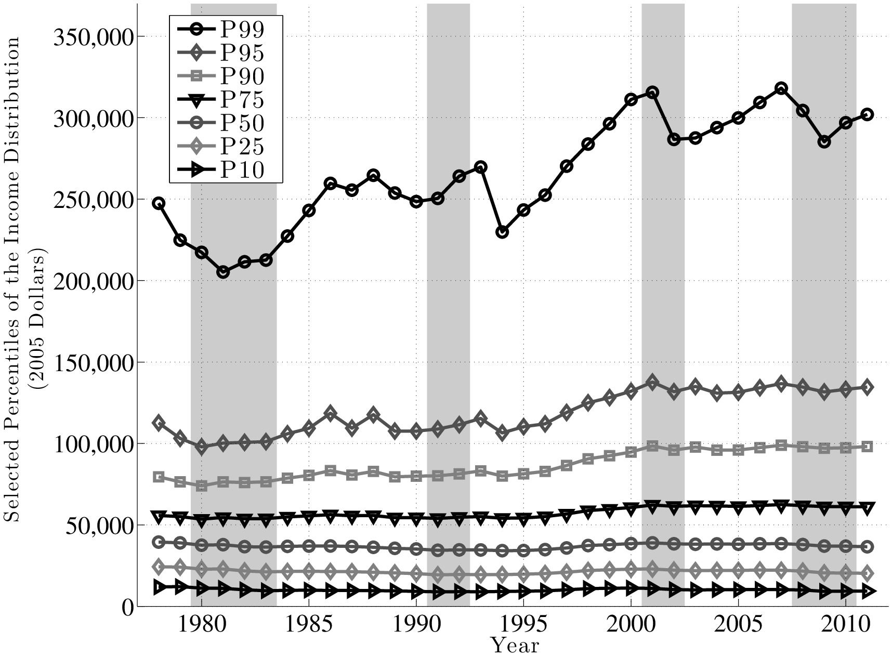
Tables II and IV report some key summary statistics for the base sample used in the paper. Figure 20 plots selected percentiles of the earnings distribution over the sample period. Panis et al. (2000) and Olsen and Hudson (2009) contain more detailed descriptions of the MEF dataset.
9.2 Comparison to CPS Data
Figure 21 plots the log differential between the 90th and 50th percentiles of the labor earnings distribution, as well as the log differential between the 50th and 10th percentiles (hereafter abbreviated as L90-50 and L50-10, respectively). A couple of remarks are in order. First, it is useful to compare this figure to the Current Population Survey (CPS) data, which has been used extensively in the previous literature to document wage inequality trends. An important point to keep in mind is that studies that used the CPS have typically focused on hourly wage inequality, whereas our dataset only contains information on annual (wage and labor) earnings. With this difference in mind, note that Autor et al. (2008), Figure 3 report a level of L90-50 of 55 log points in 1978, which rises by about 30 log points until 2005. In this paper, the level of L90-50 is 72 log points (most likely higher because of the dispersion in labor supply) and rises by about 28 log points until 2005, a result similar to Autor et al. (2008)’s numbers. In both datasets, the rise in L90-50 is secular and is remarkably stable over three decades.27 Thus, even though the difference between hourly wage and annual earnings matters for the levels, it has little effect on the secular trend during this period.
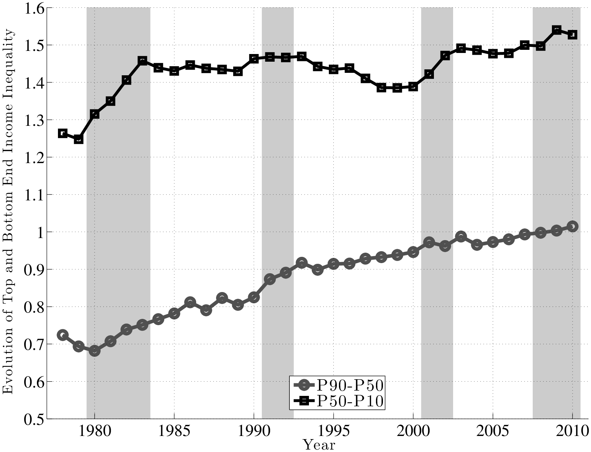
Second, turning to the bottom end, the CPS data show slightly different patterns, depending on whether one uses CPS March weekly wages or May/ORG hourly data. But the general pattern is a rapidly widening L50-10 gap from 1978 to 1987, which then stays flat or declines, depending on the dataset. In our case, the rise in L50-10 happens between 1979 and 1983, and then it stays relatively flat until 2000, after which time it starts rising again. It seems safe to conjecture that labor supply heterogeneity could be more important at the bottom end and could account for some of the gap between the two datasets. Another source of the difference could be the underreporting of earnings in our administrative dataset or overreporting in the CPS. Some papers on measurement error adopt this latter interpretation (e.g., Gottschalk and Huynh (2010)). Notice also that the level of L50-10 is much higher in our sample—about 125 log points in 1978 compared with 65 log points in the CPS, which again can be explained by a combination of labor supply heterogeneity and under- or over-reporting.28 Overall, the two datasets reveal the same pattern at the top end, while having similar but slightly different behavior at the bottom.
9.3 Evolution of Inequality: Cross-Sectional Data
In this section we document some facts about the evolution of cross-sectional inequality. In particular, inequality is clearly countercyclical, and this is due to an expansion of inequality at both the top end and bottom end. This analysis does not require the panel dimension; it is presented here for completeness and comparison to the existing work.
It is useful to distinguish between the changes in top and bottom end inequality. To this end, we plot the 1-year change in L90-50 and L50-10 in Figure A.3. To reduce short-term mean reversion in inequality, the solid lines plot the 2-year difference in each inequality measure (divided by two), which is smoother. This differencing eliminates the secular trend and allows us to focus on the cyclical change in inequality.
First, notice the cyclical movement in the bottom-end inequality, rising in every one of the four recessions and falling (into the negative territory) subsequently. The increases in the 1980–83 and 2001–02 recessions are especially pronounced, as is the fall during the 1990s. The change in the top-end inequality is also cyclical, rising during the 1980–83 and 1991–92 recessions. Compared with the bottom-end inequality, though, L90-50 rises virtually throughout the period. Overall, the combination of these two pieces shows that overall inequality (L90-10) itself is countercyclical.
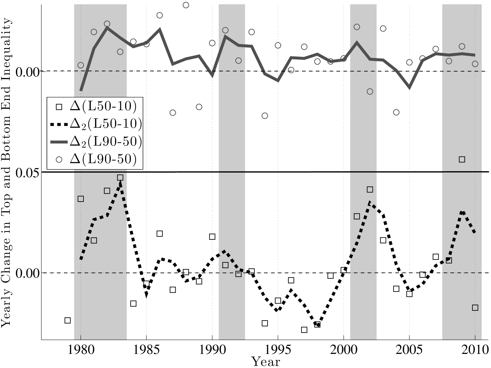
10 Sensitivity Analysis
10.1 Mean-Reverting Shocks
We now report the key statistics on standard deviation and skewness by quasi-differencing the data, \(y_{t}-\rho y_{t-1}\), and using three possible values for \(\rho =0.80,0.90\), and \(0.95.\) As seen in these figures, the lack of cyclicality in the standard deviation is robust to these variations. The level of skewness is lower the lower is \(\rho\) but the countercyclicality remains intact for all values of \(\rho.\)
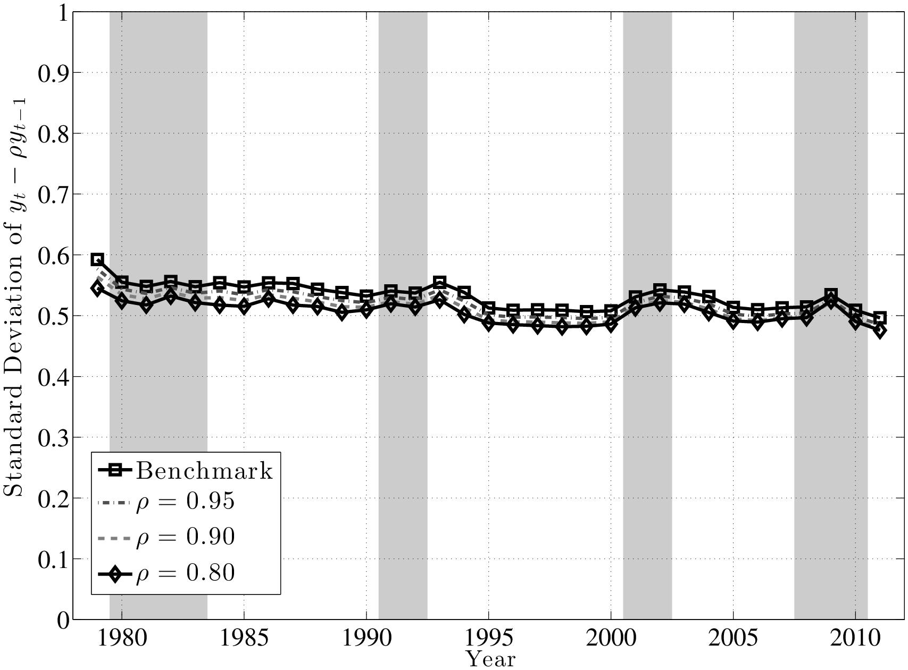
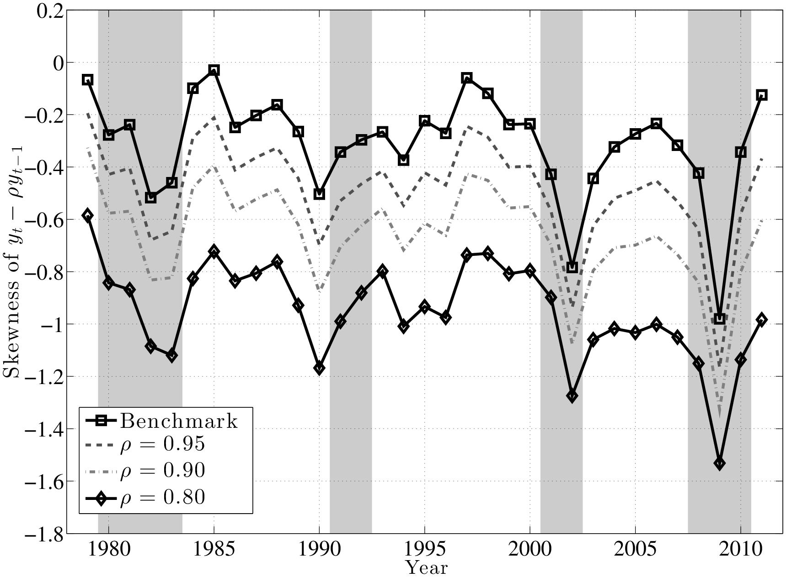
10.2 Within-Group Variation by Age Group
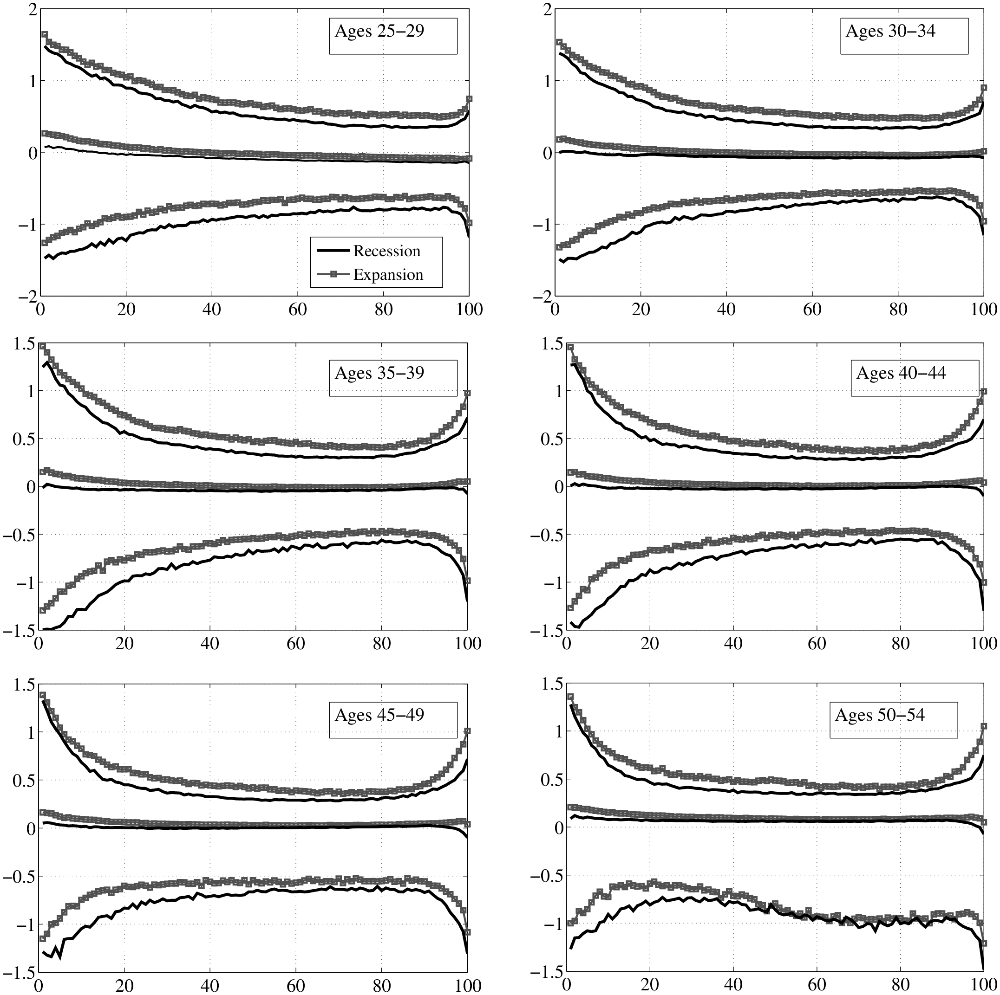
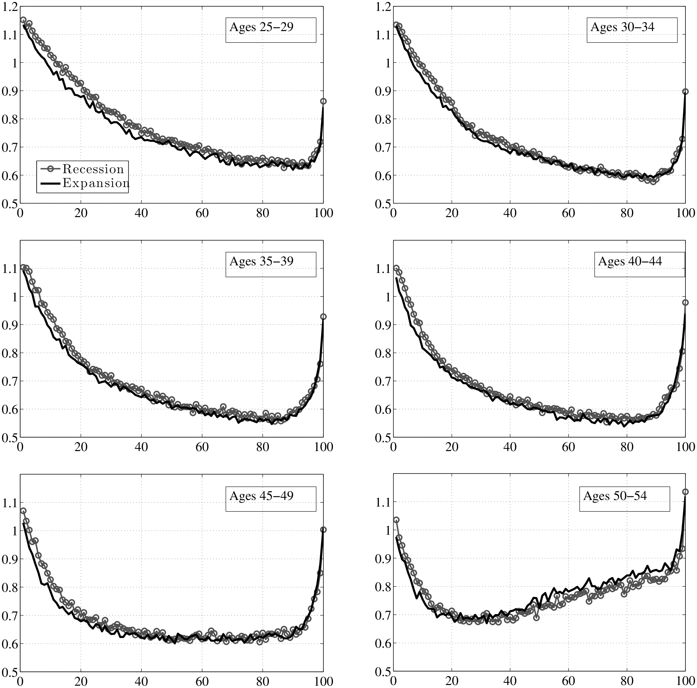
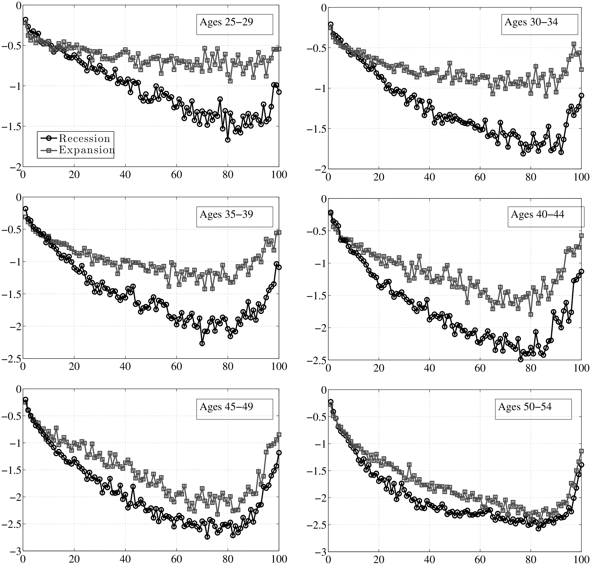
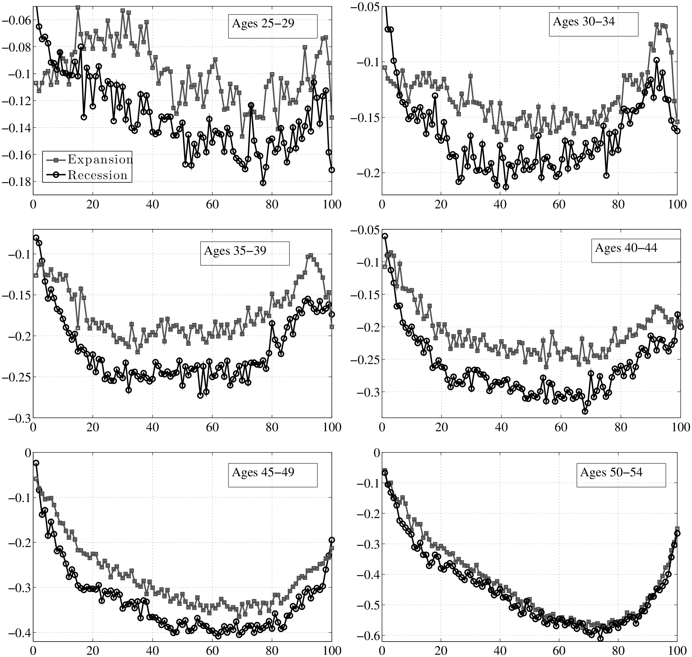
10.3 Between-Group Variation by Age Group
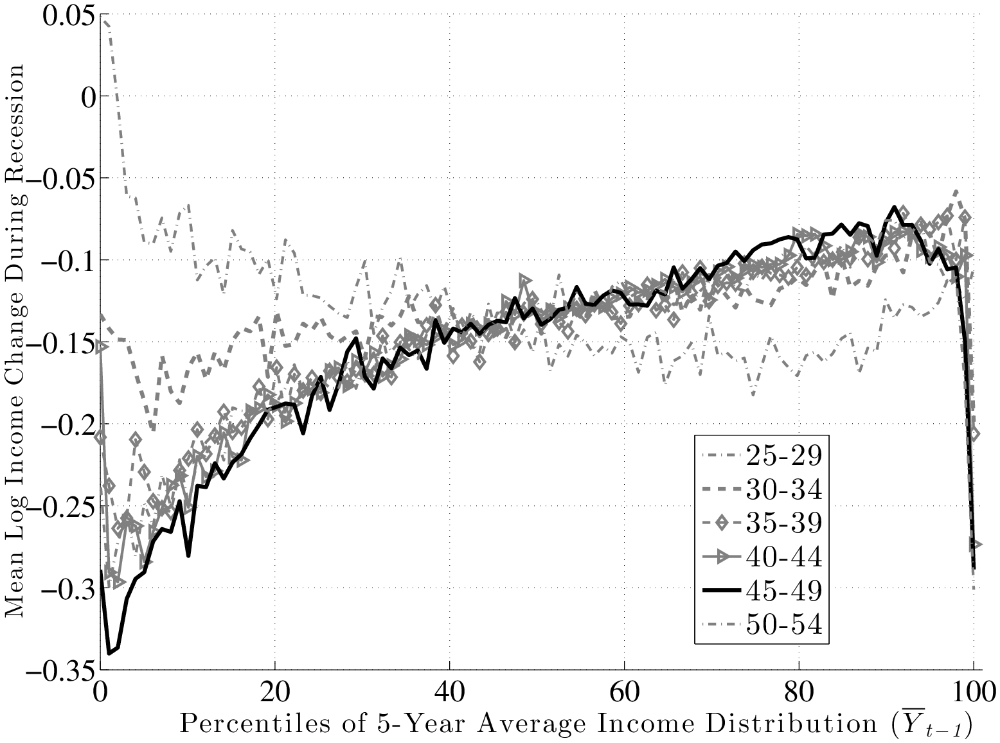
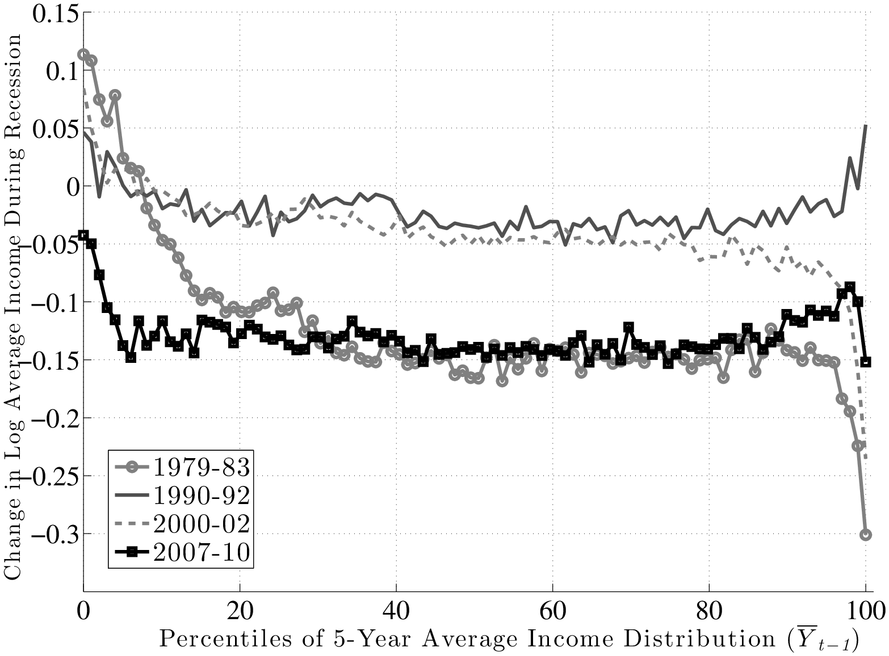
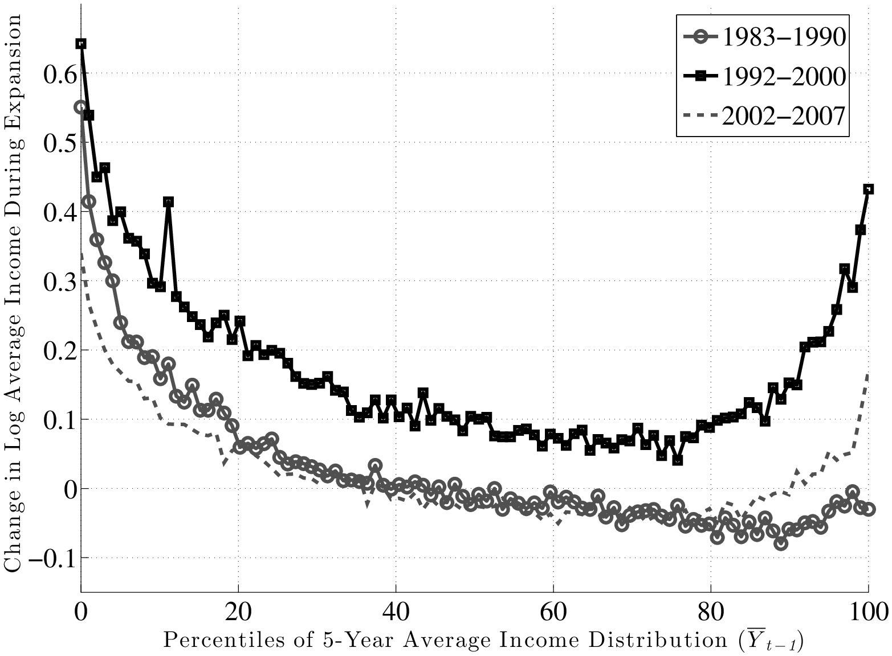
10.4 Alternative Measure of Factor Structure: \(f_{1}\)
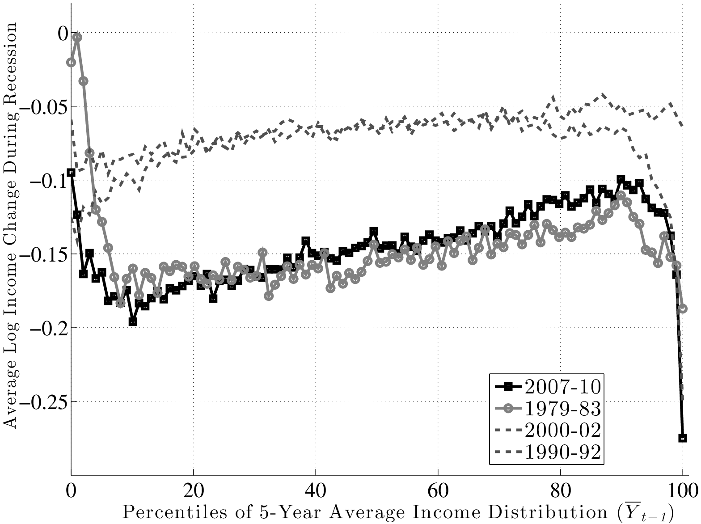
We now construct the alternative measure of average earnings growth, \(f_{1},\) described in the main text (Section 6). Recall that \(f_{1}\) differs from \(f_{2}\) in two important ways. First, \(f_{1}\) excludes individuals with zero earnings in either year \(t\) or year \(t+k\). Because the probability of full-year non-employment rises in recessions most strongly for low-income individuals, dropping them will tend to increase \(f_{1}\) below the median relative to \(f_{2}\). Second, because \(f_{1}\) is based on the average of log earnings, whereas \(f_{2}\) is based on the log of average earnings, the latter will tend to be higher within quantiles that have a wider dispersion of earnings growth rates (due to Jensen’s inequality). So, we would expect this force to raise \(f_{2}\) relative to \(f_{1}\) below the median level of \(\overline{Y}_{t-1}\) where the variance of shocks is higher, as well as at the very top end for the same reason.
Figure 31 plots \(f_{1}\) for each of the four recessions. A quick comparison to Figure 13 shows that the two measures reveal the same qualitative patterns. The clear upward-sloping factor structure is there for all recessions. Quantitatively, the slope is somewhat smaller—a difference of 10 log points between the 90th and 10th percentiles during the Great Recession versus 17 log points under \(f_{2}\). Inspecting the two graphs shows that the difference mainly comes from the steeper drop in \(f_{2}\) between the 20th and 1st percentiles, probably due to the increased chance of unemployment in this range mentioned above. Between the 20th and 90th percentiles, the two graphs differ by little. The other recessions show slopes that are also slightly lower than before. Another difference to note is that under \(f_{1}\), the 1980–83 recession looks less favorable to individuals in the top 10 percent—their earnings growth pattern resembles the recent recessions more closely. This suggests that the strong performance of this group revealed by \(f_{2}\) was affected by some large gains at the right tail, which dominated the mean earnings measure for these groups in 1983.
Overall, the two measures are quite comparable. In the main text, we focus on \(f_{2}\) so as to capture the total earnings risk, which includes the risk of long-term unemployment rising during recessions.
10.5 Rising Stars versus Stagnant Careers
We now control for three characteristics simultaneously: age, \(\overline{Y}^{i}_{t-1}\), and \(\Delta _{5}(y^{i}_{t-1})\). Because the 1979–83 period does not allow us to construct the pre-episode growth rate, we drop it from the analysis of this section.
We first sort individuals within an age group according to their \(\overline{Y}^{i}_{t-1}\) and \(\Delta _{5}(y^{i}_{t-1})\) (independently in each dimension) and compute 50- and 40-quantile thresholds, respectively. We use these thresholds to assign each individual into groups formed by the intersection of age, pre-episode average earnings (indexed by \(j\)), and earnings growth (indexed by \(p\)) categories. To give an idea about the bounds of a typical group, for the analysis of the Great Recession, one such group will consist of individuals who (i) were between the ages of 35 and 39 in year 2006, (iii) earned average annual earnings (\(\overline{Y}^{i}_{t-1}\)) between $32,033 and $33,455 from 2002 to 2006, and (iii) experienced an annual earnings growth rate between 1.30 percent and 1.49 percent per year from 2002 to 2006. Clearly, this is a finely defined group of individuals. For each of these 2000 cells, we compute the average labor earnings: \(y^{j,p}_{t}\) and \(y^{j,p}_{t+k}\).29 We then regress \[ y^{j,p}_{t+k}-y^{j,p}_{t}=\sum ^{50}_{j=1}\alpha _{j}d^{j}_{\overline{Y}}+\sum ^{40}_{p=1}\gamma _{p}d^{p}_{\Delta y^{i}}+u^{j,p}_{t}, \] where \(d^{j}_{\overline{Y}}\) is a dummy variable that equals one if the group on the left hand side belongs in the \(j^{\text{th}}\) quantile of the \(\overline{Y}_{t-1}\) distribution and zero otherwise. The dummy \(d^{p}_{\Delta y^{i}}\) is defined analogously for the quantiles of \(\Delta _{5}(y^{i}_{t-1})\). The 90 dummies are estimated via ordinary least squares.
The main findings are as follows. First, the additional control for \(\Delta _{5}(y^{i}_{t-1})\) has virtually no effect on the results presented in the main text where we only conditioned on \(\overline{Y}^{i}_{t-1}\). This can be seen clearly in Figure 33), which plots the original graph (\(f_{2}(\overline{Y}_{t-1})\)) superimposed on the new one (\(f_{2}\left (\overline{Y}_{t-1}|\Delta Y_{t-1}\right)\)). Second, the main finding is that pre-episode earnings growth has a significant effect on future growth. This is shown in Figure 32, which plots average earnings growth during expansions (blue line with circle markers) and recessions (red line with square markers). While mean reversion is apparent in both cases, the gap between the two graphs is smallest in the middle and expands at both ends. This is clearly seen in the right panel, which plots the annualized gap between expansions and recessions. The implication is that workers with the highest and lowest earnings growth rates prior to an episode do better during expansions than recessions. This is related to the fact documented earlier that the top of the earnings shock distribution collapses during recessions. Consequently, the earnings growth rate of those individuals whose earnings would have grown faster during expansions actually slows down during a recession.30
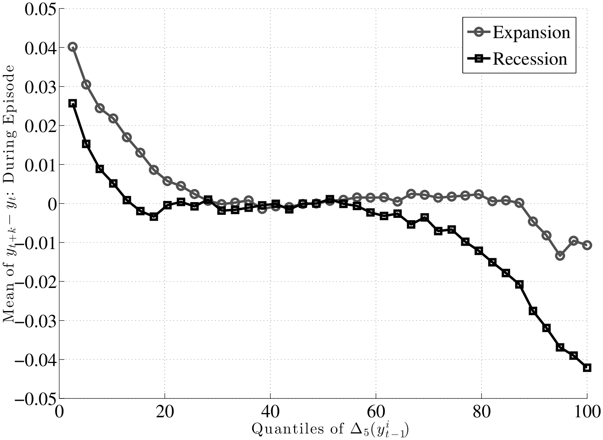
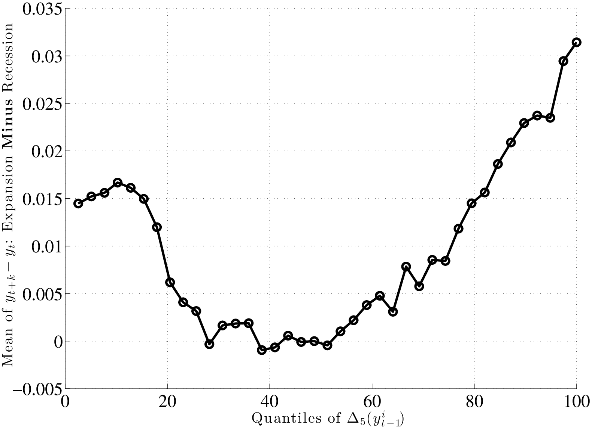
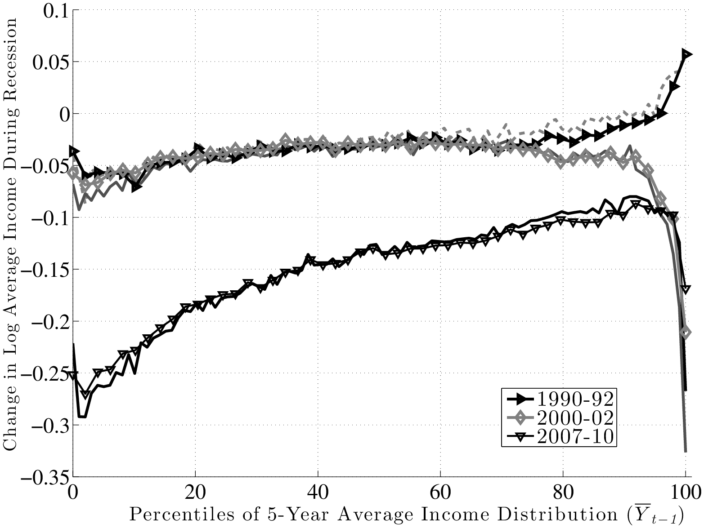
10.6 What Role Does Unemployment Play?
How much of the countercyclicality of left-skewness is due to the fact that unemployment rises in recessions, so more individuals experience large negative earnings changes, because they are part-year unemployed? Here, we address this question.
Recall that the MEF dataset does not contain information on labor hours or unemployment. However, providing an upper bound on the potential effects of unemployment is still possible. To begin with, notice that unemployment (or non-employment) can affect our results through two separate channels. First, workers that are full-year non-employed are excluded from the sample in that year. This creates a truncation at the bottom end of the earnings growth distribution, whose severity varies over the business cycle. Second, many part-year unemployed individuals are still included in our sample as long as their annual earnings remains above \(Y_{\text{min}}.\) (Incidentally, both of these assumptions are precisely the same ones made in the bulk of existing literature on income risk.) It is useful to discuss whether and, if so, how they might be affecting our findings on skewness.
The Effect of Part-Year Unemployment. First, recall that the countercyclicality of left-skewness is due to both (i) the compression of positive earnings growth changes toward the median and (ii) the expansion of negative earnings growth rates toward the bottom end (Figures 4, 7, 10, and 12). The compression at the top is unlikely to be related to unemployment. So even if the bottom half remained unchanged, skewness would be more negative during recessions due to the compression at the top alone.31
| CPS data | SSA data | |||||
| Year: | \(x\gt 0\) (wks) | \(x\gt 13\) | \(x\gt 26\) | Period: | \(E\rightarrow N\) | \(N\rightarrow E\) |
| 1979 | 10.5 | 4.4 | 1.5 | 1979-83 | 5.1 | 4.4 |
| 1984 | 11.4 | 6.3 | 2.8 | 1983-90 | 4.1 | 3.8 |
| 1989 | 10.0 | 4.7 | 1.8 | 1990-92 | 3.8 | 2.7 |
| 1994 | 9.5 | 5.2 | 2.3 | 1992-00 | 3.1 | 2.8 |
| 1999 | 6.0 | 3.0 | 1.1 | 2000-02 | 3.7 | 2.3 |
| 2004 | 6.5 | 3.6 | 1.4 | 2002-07 | 3.2 | 2.7 |
| 2005 | 6.7 | 3.6 | 1.4 | 2007-10 | 4.5 | 2.3 |
| 2010 | 10.4 | 6.6 | 3.2 | |||
| avg. \(t\) | 8.3 | 3.9 | 1.5 | Expansion | 3.5 | 3.1 |
| avg. \(t+5\) | 9.4 | 5.4 | 2.4 | Recession | 4.3 | 2.9 |
Second, countercyclical left-skewness is also evident in 5-year earnings changes. Because recessions last less than 5 years, (the incidence of) unemployment is only slightly higher in \(t+5\) than in \(t\). This can be seen in the left panel of Table XII, which reports the fraction of 35-54 year-old males with an unemployment spell longer than \(x=0,13,26\) weeks in a given year, computed from the CPS (Integrated Public Use Microdata Series—IPUMS).
Consider spells longer than 13 weeks (third column). Only 5.4 percent of prime-age males are in this group in year \(t+5\) (averaging over 1984, 1994, 2004, and 2010). Now let us assume that (i) none of these individuals spent any time in unemployment in year \(t\) and (ii) their actual wages and hours remained the same in \(t\) and \(t+5\) while they were employed. Then, for these individuals unemployment reduces their annual earnings by at least 25 log points between \(t\) and \(t+5\). So this would appear as a negative earnings shock of 25+ log points. Similarly, the average incidence in year \(t\) is 3.9 percent, so by the same computation, these individuals will appear as having received a positive shock of 25+ log points between \(t\) and \(t+k.\) So the net effect on skewness depends on the gap: \(5.4-3.9=1.5\) percent of individuals who get more negative shocks than positive in year \(t+k\). If we assume for the moment that these individuals are evenly spread across the \(\overline{Y}_{t-1}\) distribution, it would amount to a 1.5 percent net change of the sample within each quantile, which is a small number. Further, the same computation can be repeated for \(x=0\) or \(x=26\) weeks, with nearly identical results.32 \(^{,}\)33
Overall, this analysis suggests that the direct effect of unemployment is likely to be small for the results on skewness. The cyclical changes in unemployment for prime-age males is simply too small to account for the countercyclicality of skewness, which is observed across the entire range of past earnings levels and earnings growth rates.
Excluding Zeros (Full-Year Non-employed). A second and separate issue relates to our exclusion of full-year non-employed individuals. If anything, this assumption is truncating the actual downside risk in recessions and is understating the countercyclicality of skewness. This can be seen as follows. Using our sample, we compute the fraction of individuals that are in the sample in year \(t\) but not in \(t+1\) for every year of the sample. Then for each business cycle episode, we report the average figure in the right panel of Table XII. Not surprisingly, we are dropping more individuals from the sample in each recession (given that the likelihood of full-year non-employment rises). On average we are dropping 4.3 percent of individuals from our sample in year \(t+1\) during recessions and 3.5 percent during expansions. If these excluded individuals were included (for example, by assigning them a nominal earnings level, say, $100 in that year), this would register as a large earnings drop in recessions and increase the left-skewness in recessions. However, because the change over the business cycle is small, the effect would also be small.
10.7 Broadening the Definition of Business Cycles
So far in the analysis, we have viewed business cycles as consisting of recessionary and expansionary episodes. But some important macroeconomic variables do not perfectly synchronize with these episodes. For example, as also mentioned earlier, unemployment peaked in 1993 and 2003—two years that are part of expansions. Similarly, the stock market experienced a significant drop in 1987, again during an expansion. With these considerations in mind, this section explores the robustness of our results to alternative indicators of business cycles.
| Dependent variable: \(f^{j}_{2}\) | |||||||
| 1978-2009 | 1985–2009 | ||||||
| \(x\rightarrow\) | \(\Delta\)GDP | \(R^{\text{S}}_{t,t+1}\) | \(\Delta U\) | \(\Delta\)GDP | \(R^{\text{S}}_{t,t+1}\) | \(\Delta U\) | |
| \(j:\) | P99.9 | 3.07 | 0.43 | –4.76 | 4.55 | 0.46 | –6.87 |
| P99 | 1.45 | 0.20 | –2.42 | 2.09 | 0.22 | –3.34 | |
| P90 | 1.48 | 0.06 | –1.17 | 1.70 | 0.06 | –1.21 | |
| P75 | 0.75 | 0.06 | –1.22 | 0.75 | 0.05 | –1.13 | |
| P50 | 1.04 | 0.09 | –1.77 | 1.09 | 0.08 | –1.74 | |
| P25 | 1.63 | 0.14 | –2.80 | 1.78 | 0.14 | –2.86 | |
| P10 | 1.85 | 0.17 | –3.22 | 2.06 | 0.16 | –3.34 | |
| std. dev.(x) | 2.10 | 16.80 | 1.23 | 1.81 | 17.78 | 1.10 | |
For a given quantile \(j\) of \(\overline{Y}_{t-1}\), we regress the change between \(t\) and \(t+1\) in log average earnings (\(f^{j}_{2}\)) on alternative measures of business cycles, denoted with \(x\): \[ f^{j}_{2}(t,t+1)=\alpha ^{j}+\beta ^{j}x+\epsilon _{t}. \]
We consider three choices for \(x:\) (log) growth rate in GDP per capita, the annual return on the U.S. stock market (as measured by the S&P500 index), and the annual change in the male unemployment rate (denoted \(\Delta U\)). Table XIII displays the estimated \(\beta ^{j}\)s for several key quantiles and for two time periods: the full sample (1978 to 2009) and one that excludes the double-dip recession (1985 to 2009).
Several observations are worth noting. First, cyclicality is U-shaped across earnings quantiles, regardless of the business cycle variable chosen. This is consistent with the conclusion of Section 6.1 above, summarized in Figure 15. It is also consistent with Parker and Vissing-Jo rgensen (2010)’s analysis using repeated cross sections and synthetic earnings groups. Second, cyclicality increases post-1985, especially at the very top of the earnings distribution and especially when business cycles are measured by GDP growth or the unemployment rate. Cyclicality is pretty flat in the middle of the earnings distribution (e.g., between P25 and P75) and increases slightly at the bottom end. Third, the comovement of the earnings growth of top earners with GDP growth and stock returns is quite striking. For example, post-1985 a 1 percentage point rise in the male unemployment rate has been accompanied with an average earnings decline of 6.87 percent for individuals that were in P99.9 before the shock. Similarly, a 1 percentage point slowdown in GDP/capita growth implies a 4.55 percent decline in the earnings of the same individuals.34 For comparison, the corresponding numbers for individuals with median earnings is 1.08 and –1.77.
10.8 Cyclicality of Top 1 Percent Using \(f_{1}\)
Figure 34 plots the counterpart of Figure 16 using a different measure of earnings growth (\(f_{1}\)). The same pattern discussed in Section 6.2 is visible here with an even larger 5-year loss for all individuals in the top 1 percent.
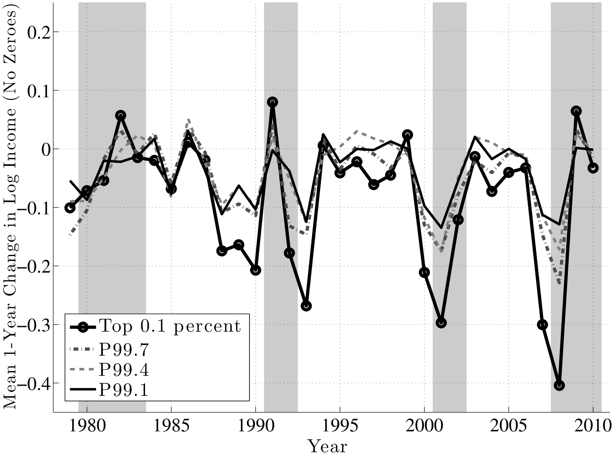
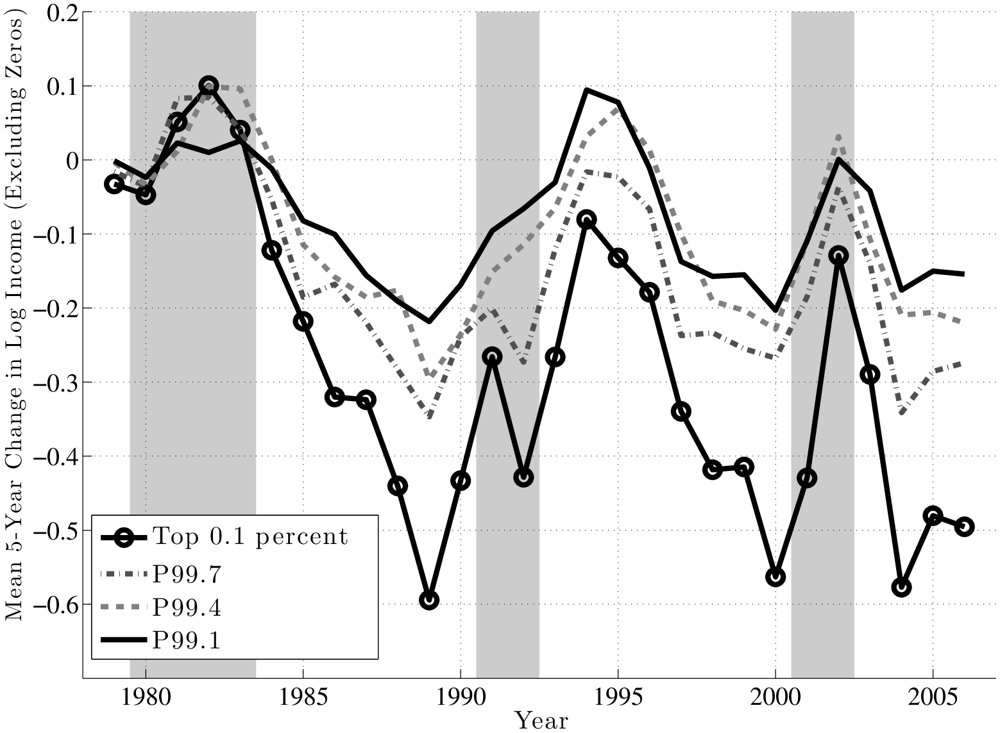
11 Details of the Parametric Estimation in Section 7
This appendix describes the method of simulated moments (MSM) estimation of the parameters of the income process described in Section 7. Our empirical targets are the de-trended values of (i) the mean, (ii) P90, (iii) P50, and (iv) P10 of 1-, 3-, and 5-year log earnings changes between 1979 and 2011 which add up to 372 moments. Specifically, we estimate the mean and selected percentiles of \(y_{it}-y_{i,}{}_{t-k}\) for the US data for \(t=1978+k,...,2011\) and \(k=1,3,5,\) where \(y_{it}\) is subject to the selection criteria discussed in Section 2. During our sample period there are secular trends in some of these statistics—in particular, in P90 and P10. Thus, we detrend each data series, so as not to confound cyclical and secular changes, by fitting a linear time trend and rescaling the residuals by the sample average of that series. The resulting data moments are reported in Table XIV.
Let \(m_{n}\) be one of these data moments, where \(n=1,...,N,\) with \(N=372\), and let \(d_{n}(\theta,X_{r})\) be the corresponding model moment that is simulated for a given vector of parameters, \(\theta\), and a given vector of random variables \(X_{r}\). When computing the model moments, we simulate the model \(R\) times and average \(d_{n}(\theta,X_{r})\) over these runs, i.e., \[ d^{R}_{n}(\theta)=\frac{1}{R}\left (\sum ^{R}_{r=1}d_{n}(\theta,X_{r})\right), \] which helps smooth the objective surface. We used \(R=4\).
In each run \(r\), we simulate the entire earnings histories of 1500 individuals in each cohort, who enter labor market at age 25 and retire at age 60. To ensure a stationary age distribution, the first and last cohorts enter labor market in 1944 and 2010, respectively. For the cohorts who entered labor market before 1978 we specify the following years as recession years: \(1945,\,1949,\,1953,\,1957,\,1960,\,1970,\,1974,\,1975\). With the exception of 1975, these are the same recession years as in Storesletten et al. (2004). Each individual is assumed to enter the labor market in year \(t\) with initial condition \(z_{i,t-1}=0\).
We minimize the “scaled” deviation between each data target and the corresponding simulated model moment. Specifically, define \[ F_{n}(\theta)=\frac{d^{R}_{n}(\theta)-m_{n}}{|m_{n}|+\gamma _{n}}, \] where \(\gamma _{n}\) is an adjustment factor. When \(\gamma _{n}=0\) and \(m_{n}\) is positive, \(F_{n}\) is simply the percentage deviation between data and model moments. This measure becomes problematic when the data moment is very close to zero, which is the case for the mean and the P50 moments. In this case, we choose \(\gamma _{n}\) such that the denominator is on average equal to the sample average of the P90 moment, so that each data series receive similar weights in the estimation. Then the MSM estimator is the solution to
\[ \min _{\theta}\boldsymbol{F}(\theta)'W\boldsymbol{F}(\theta) \]
where \(\boldsymbol{F}(\theta)=\left [F_{1}(\theta),...,F_{N}(\theta)\right].\) We set \(W\) to be an identity matrix (since \(F_{n}\) already contains appropriately scaled moments). We employ a global optimization routine to perform the minimization in (4) described in further detail in Guvenen (2013). The local minimization stage is performed with the DFNLS algorithm of Zhang et al. (2010).
| Mean | Skewness | P10 | P50 | P90 | |||||||||||
| Year ∖ k | 1-yr | 3-yr | 5-yr | 1-yr | 3-yr | 5-yr | 1-yr | 3-yr | 5-yr | 1-yr | 3-yr | 5-yr | 1-yr | 3-yr | 5-yr |
| 1978 | 0.98 | -0.15 | -1.54 | -0.16 | -0.24 | -0.36 | -46.39 | -69.59 | -87.52 | 0.77 | 1.46 | 3.36 | 46.31 | 62.73 | 68.72 |
| 1979 | -3.23 | -3.66 | 2.76 | -0.37 | -0.45 | -0.42 | -49.10 | -73.65 | -73.22 | -0.78 | 1.13 | 6.04 | 34.88 | 54.41 | 70.72 |
| 1980 | 1.90 | -0.14 | 9.32 | -0.32 | -0.56 | -0.32 | -38.88 | -67.76 | -62.34 | 1.62 | 4.26 | 10.08 | 48.43 | 58.80 | 79.97 |
| 1981 | -3.36 | 3.35 | 10.64 | -0.60 | -0.47 | -0.30 | -57.07 | -62.33 | -64.87 | 1.23 | 6.03 | 11.45 | 37.18 | 64.27 | 86.60 |
| 1982 | 0.49 | 10.23 | 14.72 | -0.53 | -0.18 | -0.17 | -45.22 | -50.52 | -56.77 | 2.00 | 8.27 | 12.87 | 42.79 | 75.64 | 90.46 |
| 1983 | 6.44 | 13.46 | 17.85 | -0.17 | -0.09 | -0.07 | -33.51 | -48.73 | -52.54 | 3.42 | 9.60 | 13.21 | 57.64 | 86.17 | 100.85 |
| 1984 | 4.33 | 8.97 | 11.70 | -0.09 | -0.14 | -0.12 | -39.52 | -55.11 | -59.04 | 2.99 | 7.51 | 9.40 | 53.15 | 74.97 | 87.01 |
| 1985 | 3.61 | 8.43 | 8.86 | -0.30 | -0.20 | -0.29 | -43.58 | -55.45 | -63.33 | 3.09 | 6.35 | 8.54 | 52.97 | 77.72 | 81.91 |
| 1986 | 1.72 | 4.97 | 5.06 | -0.25 | -0.21 | -0.27 | -46.88 | -60.98 | -72.87 | 1.90 | 3.97 | 6.09 | 48.50 | 70.37 | 79.45 |
| 1987 | 3.80 | 4.56 | 6.92 | -0.20 | -0.36 | -0.26 | -39.25 | -58.33 | -67.35 | 1.60 | 4.51 | 7.46 | 54.53 | 67.60 | 81.09 |
| 1988 | 0.57 | 0.62 | 6.37 | -0.30 | -0.39 | -0.28 | -46.23 | -69.29 | -72.78 | 0.99 | 3.31 | 7.49 | 45.38 | 62.97 | 83.40 |
| 1989 | 1.02 | 3.31 | 7.19 | -0.53 | -0.37 | -0.36 | -43.42 | -62.57 | -64.60 | 2.08 | 5.30 | 9.14 | 43.15 | 65.12 | 74.95 |
| 1990 | -1.33 | 5.13 | 9.60 | -0.37 | -0.22 | -0.21 | -49.13 | -60.22 | -60.62 | 0.72 | 5.11 | 9.58 | 40.58 | 71.87 | 79.67 |
| 1991 | 2.96 | 7.75 | 14.14 | -0.31 | -0.29 | -0.18 | -41.98 | -53.99 | -55.27 | 2.74 | 7.20 | 12.30 | 49.34 | 70.16 | 87.56 |
| 1992 | 3.32 | 8.34 | 17.14 | -0.28 | -0.26 | -0.08 | -43.32 | -53.75 | -52.67 | 2.00 | 7.07 | 13.76 | 56.02 | 73.03 | 94.84 |
| 1993 | 2.00 | 8.97 | 20.79 | -0.38 | -0.22 | 0.00 | -47.38 | -57.41 | -51.86 | 2.67 | 7.91 | 16.71 | 47.37 | 74.94 | 100.87 |
| 1994 | 3.85 | 13.55 | 23.52 | -0.22 | -0.02 | 0.06 | -36.43 | -43.24 | -41.27 | 2.60 | 9.64 | 18.08 | 48.12 | 80.05 | 101.18 |
| 1995 | 3.89 | 16.74 | 24.18 | -0.27 | 0.04 | 0.04 | -36.38 | -39.19 | -41.43 | 2.89 | 12.10 | 18.93 | 47.26 | 83.81 | 101.94 |
| 1996 | 6.39 | 17.37 | 23.11 | -0.05 | 0.04 | -0.02 | -33.35 | -38.83 | -45.68 | 4.02 | 12.76 | 18.47 | 52.51 | 84.25 | 104.04 |
| 1997 | 7.08 | 15.43 | 15.58 | -0.10 | -0.07 | -0.33 | -34.01 | -43.28 | -59.54 | 4.97 | 12.02 | 15.43 | 53.98 | 81.62 | 91.43 |
| 1998 | 4.46 | 10.96 | 10.23 | -0.21 | -0.22 | -0.44 | -38.40 | -53.03 | -68.05 | 3.61 | 9.32 | 11.96 | 49.28 | 79.55 | 85.59 |
| 1999 | 4.38 | 5.02 | 8.03 | -0.20 | -0.52 | -0.48 | -37.79 | -62.62 | -67.08 | 3.32 | 7.13 | 10.43 | 49.22 | 68.16 | 78.09 |
| 2000 | 1.98 | 1.80 | 5.55 | -0.39 | -0.63 | -0.49 | -45.24 | -68.25 | -67.90 | 2.37 | 5.46 | 7.98 | 49.58 | 64.76 | 74.10 |
| 2001 | -2.31 | 1.68 | 6.46 | -0.74 | -0.53 | -0.37 | -57.81 | -69.97 | -69.74 | 1.85 | 5.33 | 8.10 | 41.02 | 62.49 | 77.55 |
| 2002 | 0.61 | 5.55 | 10.84 | -0.39 | -0.20 | -0.14 | -48.40 | -58.48 | -61.26 | 1.68 | 4.97 | 9.14 | 47.38 | 69.87 | 86.55 |
| 2003 | 2.23 | 8.10 | 9.64 | -0.27 | -0.09 | -0.10 | -45.38 | -55.43 | -65.42 | 2.31 | 5.80 | 8.14 | 48.91 | 75.69 | 86.63 |
| 2004 | 2.20 | 8.48 | 2.81 | -0.21 | -0.11 | -0.31 | -40.23 | -51.78 | -76.88 | 1.10 | 5.69 | 5.29 | 48.16 | 75.71 | 76.57 |
| 2005 | 3.39 | 5.80 | 3.00 | -0.17 | -0.18 | -0.31 | -38.85 | -57.00 | -74.61 | 2.18 | 4.98 | 5.45 | 48.90 | 70.55 | 74.62 |
| 2006 | 2.53 | -2.49 | 2.43 | -0.24 | -0.48 | -0.26 | -41.27 | -75.75 | -72.69 | 2.03 | 2.43 | 4.30 | 47.96 | 59.49 | 73.01 |
| 2007 | -0.93 | -2.97 | -0.34 | -0.46 | -48.03 | -74.01 | 0.53 | 1.44 | 42.80 | 57.07 | |||||
| 2008 | -6.41 | 0.41 | -0.89 | -0.36 | -62.53 | -63.86 | 0.12 | 2.20 | 35.12 | 60.45 | |||||
| 2009 | 1.48 | -0.25 | -42.15 | 1.02 | 46.58 | ||||||||||
| 2010 | 3.46 | -0.03 | -36.76 | 1.10 | 50.36 | ||||||||||
References
Footnotes
Following a seminal paper by Bloom (2009), a related strand of the macro literature models “uncertainty shocks” typically in the form of countercyclical productivity risk; see, among many others, Bloom et al. (2011), Fernandez-Villaverde et al. (2011), and Arellano et al. (2012).↩︎
The fact that the initial ranking of individuals is based on past earnings raises the issue of mean reversion going forward. But note that, as we discuss in greater detail in Section 6, the effect of mean reversion would work in the opposite direction of the described finding—it would imply higher future growth for those with lower past earnings. Thus, accounting for mean reversion would reveal an even stronger factor structure than these numbers suggest.↩︎
If shocks are persistent and countercyclical, cohorts that have lived through more recessions should have a larger cross-sectional dispersion of earnings at the same age than those that have not.↩︎
Since the influential work of Jacobson et al. (1993), a large empirical literature has documented large and persistent costs of cyclical job displacement; see Farber (2005) for a review of available evidence and Von Wachter et al. (2009) for recent estimates using administrative data.↩︎
Our focus on males is motivated by the fact that this group had a relatively stable employment rate and labor supply during this period. In contrast, female labor participation increased substantially during this period. Because our dataset contains only labor earnings but no hours information, including women in the analysis would have introduced an important confounding factor, which we wished to avoid.↩︎
Although the MEF also contains earnings information for self-employed individuals, these data are top-coded at the taxable limit until 1994. Because of this, we do not use these data in this paper. In an earlier version, we conducted all the analysis using total labor earnings (and included self-employed individuals) and found no difference in our substantive conclusions.↩︎
Further, Appendix A.2 contains a comparison of inequality trends revealed by the base sample to those found in the Current Population Survey (CPS) data.↩︎
Two recessions start in the first quarter (1980 and 2001) and one starts in the fourth quarter (2007), so the classification of these is clear. Only one recession starts in the third quarter of 1990, and we shift the starting date to 1991 as per the rule described.↩︎
As a complementary approach, in Appendix B.7 we study business cycle variation by analyzing the comovement of the earnings growth distribution with cyclical variables, such as the male unemployment rate, GDP per capita, and S&P500 returns.↩︎
In the text, we alternatively refer to earnings growth as “earnings change,” and with a mild abuse of language, as “earnings shocks” to prevent monotonicity.↩︎
To see whether these results are robust to mean reversion in \(\tilde{y}_{t}\), in Appendix B.1, we plot the analogs of Figures 5 and 6 using quasi-differencing: \(\tilde{y}_{t}-\rho \tilde{y}_{t-1}\), for \(\rho =0.80,0.90,0.95,\) which show that the results reported here are robust to such mean reversion.↩︎
Education is a potentially relevant worker characteristic that is not recorded in the MEF.↩︎
For 5-year changes, recession years can be defined in a number of ways, since many 5-year periods cover a given recession. We have experimented with different choices and found them to make little difference to the substantive conclusions drawn here. The reported results are for a simple definition that includes one 5-year change for each recession that starts one year before the recession begins. Specifically, the recession graph averages over four 5-year periods starting in \(t=1979,\) 1989, 1999, and 2006 (since this is the latest possible 5-year change covering the Great Recession). Expansions average over all 5-year changes that do not coincide with a recession year—that is, periods starting in \(t=1983,\) 1984, 1993, 1994, and 2002.↩︎
For one-year changes, recession years are those with \(t=\) 1980, 1981, 1982, 1990, 1991, 2000, 2001, 2007, 2008, and 2009. The remaining years are considered as expansion years.↩︎
This finding clearly contradicts one of the standard assumptions in the income dynamics literature—that the variance of earnings shocks does not depend on the current or past level of earnings. We study these features in Guvenen et al. (2013).↩︎
The same ratios can also be computed for transitory shocks. Here we see a bit more movement: the standard deviation is higher by about 4 percent (averaged across the x-axis) and L90-10 is higher by about 6 percent. So, to the extent that recessions involve a larger dispersion of shocks, these are to be found in short-term shocks without much long-term effects. Having said that, these numbers are still negligible compared with the values typically used in the literature.↩︎
A natural question is whether there are cyclical changes in moments beyond the third (skewness), for example, in the fourth moment—the kurtosis. Although the answer is yes—the kurtosis is lower in recessions compared with expansions—the differences are quite modest. We omit those results for brevity.↩︎
To be precise, \(f_{1}\) should have a time subscript, since we will allow it to vary over time. However, to keep the notation clean, we will suppress the subscript in this paper.↩︎
Recall that the earnings measure used in these computations, \(y_{t}\), is net of earnings growth due to life cycle effects as explained in Section 4. This adjustment shifts the intercept of the \(f_{2}\) function downward, which should be considered when interpreting the reported earnings growth figures.↩︎
This probably has more to do with the fact that for the 1979–83 recession, we were limited to using only earnings in 1978 to form groups (rather than taking 5-year averages as we did for other periods), which led to a higher degree of mean reversion than would otherwise have been the case.↩︎
These two recessions last half as long as the other two longer recessions, so the slope of these graphs should be interpreted in this context. However, normalizing total earnings growth (the vertical axis in these graphs) by the duration of each recession is not necessarily a satisfactory solution, because even during longer recessions, the largest earnings falls have been concentrated within one- or two-year periods (2008–09, for example).↩︎
Recall that \(f_{2}\) averages each group’s earnings before taking logs, which could be affected by a few extremely large earnings levels. By contrast, \(f_{1}\) is the mean of logs, which is less sensitive to this problem. We include the graphs with \(f_{1}\) in Appendix B.8, which shows the same qualitative patterns.↩︎
We have also experimented with a specification in which \(p_{1}\) can vary over the business cycle. That specification did not fit the moments we examine below nearly as well.↩︎
Data statistics are detrended by fitting a linear trend and rescaling each residual by the sample average to preserve the level of each statistic.↩︎
In fact, this is intimately related to the failure of the model to match the level of the standard deviation mentioned above. In other words, the data exhibit too high a level of standard deviation relative to the L90-10 dispersion, indicative of excess kurtosis (i.e., long tails).↩︎
The assumptions listed here merely reflect the limitations imposed by the small sample size of the PSID, which these researchers had to deal with.↩︎
Fitting a quadratic polynomial to the L90-50 reveals a small negative curvature, indicating an ever so slight slowdown in the rate of increase of inequality at the top.↩︎
In our sample, the average wage earnings at the 10th percentile is $8,520 per year. If an individual works 52 weeks a year at a wage of $5.85 per hour (legal minimum wage in 2007), he has to work 28 hours per week, which does not appear to be an unreasonable figure.↩︎
Because the two variables can be correlated, there is no presumption that every cell will contain the same number of observations (unlike the previous experiment with a single characteristic). Therefore, we drop cells that have less than 30 percent of the maximum number of observations.↩︎
Incidentally, controlling for past earnings growth has virtually no effect on the relationship between the quantiles of average earnings and future earnings growth documented above. Thus, further conditioning does not alter the relationship documented so far. These figures are available upon request.↩︎
Notice also that in this scenario, the variance of shocks would go down in recessions, and thus the variance would be procyclical.↩︎
In addition, the case described here relies on some unlikely assumptions. For example, the probability of unemployment is a strongly decreasing function of past income, so the change in incidence among individuals with \(\)\(\overline{Y}_{t-1}\in P90\) will be much smaller than the 1.5 percent average figure. Yet, the shift to negative skewness among that group is as large as among workers who have \(\overline{Y}_{t-1}\in P50\) as well as \(\overline{Y}_{t-1}\in P30\) (see Figure 10).↩︎
As an alternative sensitivity analysis, we repeat the computation of skewness, but this time using the 1980–85, 1990–95, and 2000–05 periods and excluding the Great Recession. With this timing, the ending year is well into the expansion, so the incidence of unemployment of 13 weeks or longer is only 0.4 percent higher in \(t+5\) compared with \(t.\) The grey dashed-dotted line in the left panel of Figure 11 plots Kelley’s skewness under these assumptions, which is still significantly more negative during these three recessions.↩︎
The corresponding figures for the whole sample period are 4.76 percent and 3.07 percent, respectively.↩︎